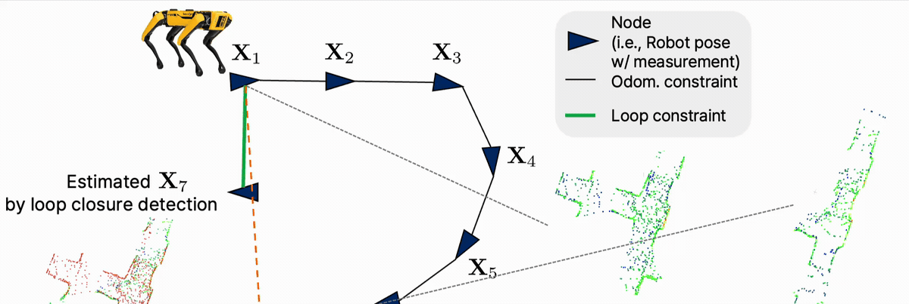
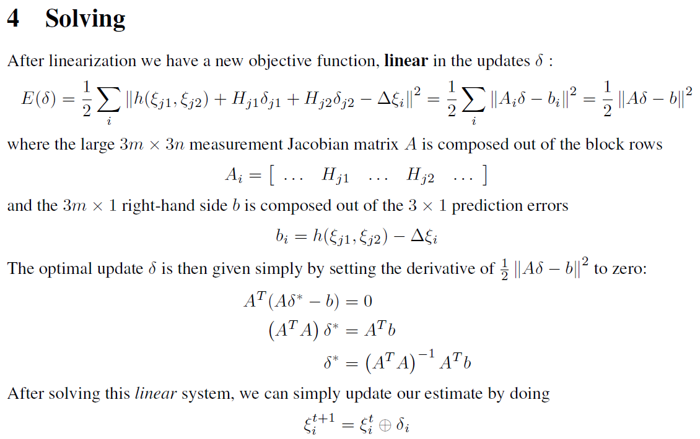
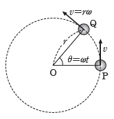
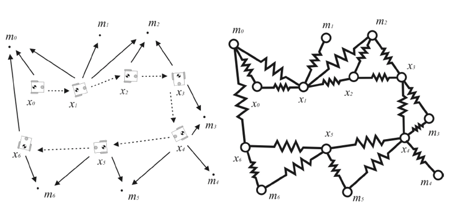
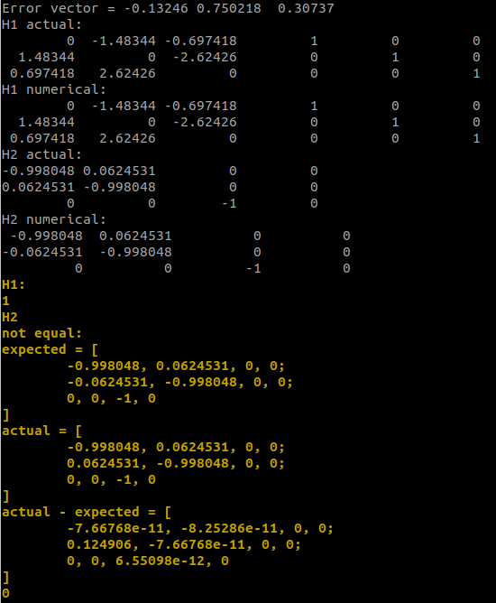

Official
GTSAM official intro tutorial
Frank Dellaert's own walk-through of GTSAM. Start here before anything else. Frank Dellaert 교수님이 직접 쓴 GTSAM 입문. 아무튼 한 번은 봐야 함.
This site is a step-by-step scaffolded tour of what actually happens inside GTSAM. Every chapter is sized to layer on the one before it. Chapter Q is a 5-minute pose-graph SLAM recipe (read it if you only need to run code). Chapters 1 through 8 build up the manifold and Lie-group vocabulary behind GTSAM factors, one small step at a time. Chapters 9 and 10 apply the framework to a real Kimera-PGMO factor and show you how to verify a Jacobian numerically. By the end, you should understand how BetweenFactor works at the implementation level: how a measurement becomes an error vector, where Local and Logmap enter, and why the Jacobian blocks have the shape they do.
이 사이트는 step-by-step scaffolding 방식으로 GTSAM 내부 동작을 익히는 튜토리얼이다. 매 챕터가 직전 챕터 위에 차근차근 쌓이도록 분량과 난이도를 의도적으로 조정했다. Chapter Q는 5분짜리 pose-graph SLAM 레시피이니 GTSAM을 돌리기만 하면 된다면 여기까지만 읽어도 된다. 1장부터 8장까지는 GTSAM factor 뒤에 있는 manifold/Lie group 어휘를 한 단계씩 쌓아간다. 9–10장은 그 framework를 실제 Kimera-PGMO factor에 적용해보고, 본인이 유도한 Jacobian을 numerical하게 검증하는 법까지 다룬다. 이 글의 목표는 BetweenFactor가 low-level에서 어떻게 동작하는지 이해하는 것이다. 즉 measurement가 어떻게 error vector가 되고, Local과 Logmap이 어디서 등장하며, Jacobian block의 모양이 왜 그렇게 나오는지를 납득하는 데 있다.
GTSAM (Georgia Tech Smoothing And Mapping) is the de-facto factor-graph library for robotics and SLAM. There are plenty of materials on how to use it, including the official tutorial and the official examples. This tutorial is different: it goes one layer deeper, into traits<T>, Local, Logmap, the AdjointMap, and the per-factor Jacobians.
GTSAM (Georgia Tech Smoothing And Mapping)은 로보틱스와 SLAM에서 가장 널리 쓰이는 factor graph 라이브러리이다. '어떻게 쓰는지'를 알려주는 자료는 공식 튜토리얼과 공식 예제를 비롯해 많이 있다. 그러나 이 튜토리얼은 한 단계 더 깊이 들어간다: traits<T>, Local, Logmap, AdjointMap, 그리고 factor별 Jacobian이 실제로 어떻게 유도되는지까지 다룬다.
You should read this if you've already run GTSAM on a toy SLAM problem but want to understand why things look the way they do. For example: why GTSAM separates "factors" from "values," or why BetweenFactor::evaluateError calls Between and then Local. If you have never written any SLAM code, start with a SLAM-backend intro first, then come back.
이미 GTSAM으로 toy SLAM을 돌려봤지만, '왜 이렇게 짜여 있나'가 궁금한 사람이 이 글의 대상이다. 예를 들어 왜 GTSAM은 'factor'와 'values'를 분리할까? BetweenFactor::evaluateError 안에서 왜 Between 다음에 Local을 부를까? 만약 SLAM 자체가 처음이라면 SLAM backend intro를 먼저 읽고 오자.
All the math here uses standard Lie-group notation: $\bm{T} \in SE(2)$ for a 2D rigid transform, $\hat{\boldsymbol{\xi}} \in \mathfrak{se}(2)$ for the corresponding Lie algebra element, and $\mathrm{Exp}(\cdot)$ for the exponential map. The notation matches the original Korean blog posts on which this site is based. 수식은 Lie group의 표준 표기를 따른다: $\bm{T} \in SE(2)$는 2D rigid transform, $\hat{\boldsymbol{\xi}} \in \mathfrak{se}(2)$는 대응되는 Lie algebra의 원소, $\mathrm{Exp}(\cdot)$는 exponential map. 이 글의 기반이 된 한국어 원본 블로그 글들의 표기와 동일하다.
A minimal end-to-end recipe so you can do pose-graph SLAM today and worry about the internals tomorrow. 우선은 오늘 안에 pose-graph SLAM을 돌리고, 내부 동작은 내일 걱정하기 위한 최소한의 레시피.
GTSAM lets you express a SLAM problem as a factor graph: a bipartite graph where variables (poses, points, calibrations, …) are connected by factors (measurements, priors, loop closures). You hand GTSAM the graph plus an initial guess, and GTSAM solves a nonlinear least-squares problem on a manifold and returns the optimized values. GTSAM은 SLAM 문제를 factor graph로 표현하게 해준다. Factor graph는 두 가지 노드(변수와 factor)로 구성된 bipartite graph이다. 여기서 variables(pose, point, calibration 등)는 우리가 추정하고자 하는 양이고, factors(measurement, prior, loop closure 등)는 이들에 부과되는 constraint이다. Factor graph와 initial guess만 던져주면, GTSAM이 manifold 상의 nonlinear least-squares를 풀어서 최적화된 값을 돌려준다.

NonlinearFactorGraph and add a PriorFactor on the first pose to fix the gauge.
NonlinearFactorGraph를 만들고, 첫 pose에 PriorFactor를 추가해 절대 좌표계를 고정한다.
BetweenFactor for every odometry measurement and every loop closure.
매 odometry measurement와 loop closure마다 BetweenFactor를 추가한다.
Values with an initial guess for every variable in the graph.
graph에 등장하는 모든 변수에 대해 initial guess를 Values로 제공한다.
LevenbergMarquardtOptimizer for batch, ISAM2 for incremental) and call optimize().
두 객체를 optimizer에 넘긴다. Batch면 LevenbergMarquardtOptimizer, 매 step마다 들어오는 incremental SLAM이면 ISAM2를 쓰고, 마지막에 optimize()를 호출한다.
#include <gtsam/geometry/Pose3.h>
#include <gtsam/slam/PriorFactor.h>
#include <gtsam/slam/BetweenFactor.h>
#include <gtsam/nonlinear/NonlinearFactorGraph.h>
#include <gtsam/nonlinear/ISAM2.h>
using namespace gtsam;
NonlinearFactorGraph graph;
Values initial;
// (1) Anchor the first pose with a tight prior
auto prior_noise = noiseModel::Diagonal::Variances(
(Vector(6) << 1e-4, 1e-4, 1e-4, 1e-4, 1e-4, 1e-4).finished());
graph.add(PriorFactor<Pose3>(0, pose0, prior_noise));
initial.insert(0, pose0);
// (2) Odometry: relative pose between consecutive frames
auto odom_noise = noiseModel::Diagonal::Variances(
(Vector(6) << 1e-4, 1e-4, 1e-4, 1e-2, 1e-2, 1e-2).finished());
graph.add(BetweenFactor<Pose3>(0, 1, T_0_1, odom_noise));
initial.insert(1, pose1);
// ... add more odometry factors ...
// (3) Loop closure
auto loop_noise = noiseModel::Diagonal::Variances(
(Vector(6) << 1e-3, 1e-3, 1e-3, 1e-1, 1e-1, 1e-1).finished());
graph.add(BetweenFactor<Pose3>(5, 0, T_5_0, loop_noise));
// (4) Solve incrementally
ISAM2 isam;
isam.update(graph, initial);
Values result = isam.calculateEstimate();
New users often want to "store the estimate inside the factor." GTSAM deliberately doesn't do this. A factor is a frozen mathematical object: a measurement plus a noise model plus which variables it touches. A value is the current estimate of a variable. Keeping them separate means the same BetweenFactor can be re-linearized at many different operating points during optimization without anyone editing the factor, and it makes loop closures clean: you just add another BetweenFactor to the graph, no surgery on existing factors needed.
처음 쓰는 사람들은 'factor 안에 estimate를 같이 넣어놓으면 안 되나?'라고 생각하기 쉬운데, GTSAM은 의도적으로 이 둘을 분리한다. Factor는 박제된 수학적 객체이다(measurement + noise model + 관련 변수 id). Value는 변수의 현재 estimate이다. 분리해두면, 동일한 BetweenFactor가 optimization 도중 여러 다른 linearization point에서 재선형화될 때 factor 자체를 건드리지 않아도 된다. 그리고 loop closure가 깔끔해진다: 기존 factor를 수정하지 않고 새로운 BetweenFactor 하나만 graph에 추가하면 끝.
LevenbergMarquardtOptimizer(graph, initial).optimize() solves the full nonlinear least-squares on the whole graph. Use it when you build the graph once (offline SfM, bundle adjustment, evaluation).
LevenbergMarquardtOptimizer(graph, initial).optimize() — 전체 graph 위에서 한 번에 nonlinear least-squares를 푼다. 그래프를 한 번 만들고 끝나는 경우(offline SfM, bundle adjustment, 평가용)에 사용.
ISAM2 performs incremental smoothing. Each call to isam.update(new_graph, new_values) grafts new factors and values onto the Bayes tree and re-solves only the affected sub-problem. Use it for real-time SLAM, where the graph grows continuously.
ISAM2 — incremental smoothing. isam.update(new_graph, new_values)로 새로운 factor와 value들을 Bayes tree에 붙이고, 영향을 받는 sub-problem만 다시 풀어준다. Graph가 매 frame 자라나는 real-time SLAM에 적합.
Rule of thumb: ISAM2 for online SLAM (LIO-SAM, Kimera, FAST-LIO-SAM), batch LM for evaluation and ablations.
대충 정리하면: online SLAM은 ISAM2(LIO-SAM, Kimera, FAST-LIO-SAM 등), 평가·ablation은 batch LM.
Every variable referenced by a factor must appear in Values before you call optimize() or isam.update(). Forgetting to insert a variable is the single most common source of cryptic GTSAM crashes. Conversely, never insert the same key twice; use update instead.
factor가 참조하는 모든 변수는 optimize() 또는 isam.update()를 호출하기 전에 Values에 반드시 들어 있어야 한다. insert를 빼먹는 것은 GTSAM이 알 수 없는 에러로 죽는 가장 흔한 원인이다. 반대로 같은 key를 두 번 insert하면 안 된다. 갱신하려면 update를 써라.
That's everything you need to run pose-graph SLAM today. The rest of this site (Chapter 1 onward) explains why the lines above actually work. 오늘 pose-graph SLAM을 돌리기 위해 필요한 건 여기까지가 전부다. 이 사이트의 나머지(Chapter 1 이후)는 위 코드가 왜 동작하는지에 대한 설명이다.
A line-by-line tour of BetweenFactor::evaluateError, the four steps it hides, and why GTSAM phrases the residual as a tangent-space vector rather than a plain matrix difference.
BetweenFactor::evaluateError를 line-by-line으로 뜯어보고, 그 안에 숨어 있는 4단계의 흐름과 GTSAM이 residual을 단순 행렬 차이가 아니라 tangent space vector로 두는 이유를 살펴본다.
I am a postdoc in Luca Carlone's group at MIT, where GTSAM is the default backend, so I often need to read its internals. Surprisingly little material explains what GTSAM is doing under the hood, so this series fills that gap: it traces the pose-graph (or factor-graph) optimization exposed through GTSAM's tidy classes down to the Lie-group machinery underneath. 나는 GTSAM의 주요 관리자인 Luca Carlone 교수님 연구실에서 포닥으로 일하고 있다 보니, GTSAM 기반으로 코드를 짤 일이 많아졌고 자연스럽게 내부를 깊이 들여다볼 일도 많아졌다. GTSAM이 내부적으로 어떻게 동작하는지 설명하는 글은 생각보다 많지 않아서, 이 시리즈에서는 GTSAM이 제공하는 pose graph(혹은 factor graph) optimization이 Lie group 위에서 어떻게 돌아가는지 면밀히 다뤄보고자 한다.
The level of this series sits between "I have run a SLAM example once" and "I want to derive a new factor." If you only need a recipe for pose-graph SLAM, the Quick Start is enough. If you have never opened the official GTSAM tutorial or Pose2SLAMExample.cpp, skim those first; the rest of this chapter assumes you have.
이 시리즈는 SLAM을 처음 접하는 이에게 적합한 글은 아니다. SLAM을 한 번이라도 돌려보았고, 내부적으로 어떤 과정이 일어나서 optimization이 되는지 보고 싶은 이들에게 도움이 될 것이다. 본격적으로 들어가기 전에 공식 GTSAM 튜토리얼과 Pose2SLAMExample.cpp를 한 번 훑어보고 오자.
As Pose2SLAMExample.cpp already shows, a pose-graph problem in GTSAM has three steps: (i) build a NonlinearFactorGraph and add the constraints (here, BetweenFactors) you want; (ii) provide an initial guess for every variable through Values; (iii) hand both to an optimizer and call optimize(). So the question is: how does BetweenFactor actually turn this graph into an optimization problem?
Pose2SLAMExample.cpp에서 보았듯이, GTSAM에서 pose graph optimization을 하는 절차는 크게 세 단계이다. (i) NonlinearFactorGraph에 원하는 constraint(여기서는 BetweenFactor)를 더해 graph 구조를 만들고, (ii) 그 graph에 필요한 initial value를 Values로 채운 뒤, (iii) 둘을 optimizer에 넘겨 optimize()를 호출하면 된다. 그렇다면 BetweenFactor는 내부적으로 어떻게 동작해서 optimization을 가능하게 할까?
graph.add(PriorFactor<Pose2>(1, Pose2(0, 0, 0), priorNoise));
// Same noise model for odometry and loop closures, for simplicity
noiseModel::Diagonal::shared_ptr model =
noiseModel::Diagonal::Sigmas((Vector(3) << 0.2, 0.2, 0.1));
// 2b. Odometry factors between consecutive poses
graph.add(BetweenFactor<Pose2>(1, 2, Pose2(2, 0, 0 ), model));
graph.add(BetweenFactor<Pose2>(2, 3, Pose2(2, 0, M_PI_2), model));
graph.add(BetweenFactor<Pose2>(3, 4, Pose2(2, 0, M_PI_2), model));
graph.add(BetweenFactor<Pose2>(4, 5, Pose2(2, 0, M_PI_2), model));
// 2c. Loop closure: pose 5 returns near pose 2
graph.add(BetweenFactor<Pose2>(5, 2, Pose2(2, 0, M_PI_2), model));
Conceptually, BetweenFactor encodes a relative-pose measurement between two variables, or more generally a relative measurement on a Lie group. If you wanted a pose-to-point distance instead, you would use PoseToPointFactor. Because the user only has to declare which factors connect which variables, Frank Dellaert calls this a factor graph; the term pose graph is just the special case in which every variable is a pose.
개념적으로 BetweenFactor는 두 변수 사이의 상대 pose measurement를 표현하는 factor이며, 더 일반적으로는 Lie group 위에서 정의된 상대 measurement를 표현한다고 볼 수 있다. Pose-to-point 거리를 쓰고 싶다면 PoseToPointFactor를 쓰면 된다. 사용자는 어떤 factor가 어떤 변수들에 연결되는지만 선언하면 되기 때문에 Frank Dellaert 교수님은 이를 factor graph라고 부르고, pose graph는 모든 변수가 pose인 특수 케이스라고 생각하면 된다.
evaluateError
3. Factor의 심장: evaluateError
Every BetweenFactor ultimately funnels through one method, evaluateError:
모든 BetweenFactor는 결국 단 하나의 함수, evaluateError로 흘러 들어간다:
/// evaluate error, returns vector of errors size of tangent space
Vector evaluateError(const T& p1, const T& p2,
OptionalMatrixType H1, OptionalMatrixType H2) const override {
T hx = traits<T>::Between(p1, p2, H1, H2); // h(x)
// manifold equivalent of h(x)-z -> log(z, h(x))
#ifdef GTSAM_SLOW_BUT_CORRECT_BETWEENFACTOR
typename traits<T>::ChartJacobian::Jacobian Hlocal;
Vector rval = traits<T>::Local(measured_, hx, OptionalNone,
(H1 || H2) ? &Hlocal : 0);
if (H1) *H1 = Hlocal * (*H1);
if (H2) *H2 = Hlocal * (*H2);
return rval;
#else
return traits<T>::Local(measured_, hx);
#endif
}
It looks dense, but it is really four steps stitched together. We will unpack them one by one. 얼핏 복잡해 보이지만, 사실은 4 단계가 이어 붙어 있을 뿐이다. 하나씩 뜯어 보자.
Between: predicted relative pose
Step 1. Between: 예측된 상대 pose
traits<T>::Between(p1, p2, ...) forwards to the between member of the underlying Lie-group class (Pose2, Pose3, …). All such classes inherit it from the common parent gtsam/base/Lie.h:
traits<T>::Between(p1, p2, ...)는 해당 Lie group class(Pose2, Pose3 등)의 between 멤버 함수를 호출한다. 모든 Lie group의 '엄마 객체'인 gtsam/base/Lie.h에 다음과 같이 정의되어 있다:
Class between(const Class& g) const {
return derived().inverse() * g;
}
Class between(const Class& g, ChartJacobian H1,
ChartJacobian H2 = {}) const {
Class result = derived().inverse() * g;
if (H1) *H1 = -result.inverse().AdjointMap();
if (H2) *H2 = Eigen::Matrix<double, N, N>::Identity();
return result;
}
What are p1 and p2? They are the current estimates of the two variables connected by this factor, taken from Values:
그렇다면 여기 들어가는 p1, p2가 무엇이냐 하면, 이 factor에 연결된 두 변수의 현재 estimate, 즉 Values에 들어 있는 값들이다:
Values initialEstimate;
initialEstimate.insert(1, Pose2(0.5, 0.0, 0.2 ));
initialEstimate.insert(2, Pose2(2.3, 0.1, -0.2 ));
initialEstimate.insert(3, Pose2(4.1, 0.1, M_PI_2));
initialEstimate.insert(4, Pose2(4.0, 2.0, M_PI ));
initialEstimate.insert(5, Pose2(2.1, 2.1, -M_PI_2));
Concretely, for BetweenFactor<Pose2>(2, 3, Pose2(2, 0, M_PI_2), model), GTSAM substitutes the current estimate of key 2 as p1 and the current estimate of key 3 as p2, then computes the predicted relative pose
예를 들어 BetweenFactor<Pose2>(2, 3, Pose2(2, 0, M_PI_2), model)의 경우, optimization 도중 key 2에 해당하는 Pose2가 p1에, key 3에 해당하는 Pose2가 p2에 들어가서 다음의 예측 상대 pose를 만든다:
Following the GTSAM convention, the first key is the from frame (the reference) and the second key is the to frame: "from" reads as "with respect to". This is the opposite convention from point-cloud registration, where the source cloud is from. If that twist confuses you, see my older note on coordinate-frame conventions.
GTSAM convention에 따르면 첫 번째 key가 from(즉 기준 좌표계)이고 두 번째 key가 to이다. from은 "with respect to"의 의미이다. Registration에서 source를 from이라 부르는 convention과 정반대라 헷갈리기 쉬운데, 이해가 잘 안 가는 이는 예전 좌표계 컨벤션 글을 한 번 읽어보자.
Local: residual as a tangent-space vector
Step 2. Local: residual을 tangent space vector로
The next line, Vector rval = traits<T>::Local(measured_, hx, ...), compares the measured relative pose measured_ with the predicted one hx and returns a residual rval. If these were ordinary vectors, we could just write hx - measured_. But on $\SE(2)$ or $\SE(3)$, "addition" is matrix multiplication and "subtraction" is multiplication by an inverse. So Local computes
다음 줄 Vector rval = traits<T>::Local(measured_, hx, ...)은 measurement measured_와 추정된 상대 pose hx를 비교해 residual rval을 만든다. 만약 이 둘이 단순 vector였다면 hx - measured_라고 쓰면 끝이었을 텐데, $\SE(2)$나 $\SE(3)$ 위에서는 덧셈이 행렬 곱셈이고 뺄셈은 inverse를 곱하는 연산으로 표현된다. 그래서 Local은 다음을 계산한다:
In other words, it maps the relative error from the manifold into the tangent space at the identity via the $\Log$ map, returning a plain real vector rval (length 3 for $\SE(2)$, length 6 for $\SE(3)$). The optional Jacobians H1, H2 are produced along the way; deriving them in closed form is the topic of the next several chapters.
즉, manifold 위에서 정의된 측정/예측 차이를 $\Log$ map을 통해 identity 주변의 tangent space로 끌어내려 vector rval로 표현한다($\SE(2)$이면 길이 3, $\SE(3)$이면 길이 6). 이 과정에서 Jacobian H1, H2도 함께 계산되지만, closed-form으로 어떻게 유도되는지는 다음 글들에서 본격적으로 다룬다.
Once every factor has reported its (rval, H1, H2), GTSAM assembles a single linearized least-squares system. The figure below (from Frank Dellaert's 2D Pose SLAM in GTSAM) summarizes the bookkeeping:
모든 factor가 자신의 (rval, H1, H2)를 보고하고 나면, GTSAM은 이를 한 덩어리의 선형화된 least-squares 시스템으로 묶는다. Frank Dellaert 교수님의 2D Pose SLAM in GTSAM에서 발췌한 아래 그림이 그 흐름을 잘 요약해 준다:

evaluateError populates $H_{j_1}$, $H_{j_2}$ and the residual $b_i$. The linear system is solved for the update vectors $\delta_{j_1}, \delta_{j_2}$ on the tangent space, which are then retracted back onto the manifold.
각 factor의 evaluateError가 $H_{j_1}$, $H_{j_2}$와 residual $b_i$를 채워주고, GTSAM은 이로부터 tangent space 상의 업데이트 vector $\delta_{j_1}, \delta_{j_2}$를 푸는 선형 시스템을 구성한다. 마지막으로 이 update를 manifold 위로 되돌리는 retract 연산이 이어진다.
Matching variable names: the H1, H2 coming out of evaluateError are exactly $H_{j_1}$ and $H_{j_2}$ in the figure; the prediction hx and the measurement measured_ play the roles of $h(\xi_{j_1}, \xi_{j_2})$ and $\Delta\xi_i$, with their Local giving the residual $b_i$. The unknowns we actually solve for are the per-iteration updates $\delta_{j_1}, \delta_{j_2}$: small tangent-space corrections to the current estimates of poses $j_1$ and $j_2$.
변수 이름을 매칭하면 이렇다. evaluateError가 채워주는 H1, H2는 위 그림의 $H_{j_1}, H_{j_2}$이고, prediction hx와 measurement measured_는 각각 $h(\xi_{j_1}, \xi_{j_2})$와 $\Delta\xi_i$에 해당하며, 이 둘의 Local 결과가 residual $b_i$이다. 우리가 실제로 풀어내는 미지수는 iteration마다 구하는 update $\delta_{j_1}, \delta_{j_2}$, 즉 pose $j_1$, $j_2$의 현재 추정값에 더해줄 tangent space 상의 작은 보정량이다.
In other words, BetweenFactor only has to deliver "error here, derivatives there"; assembling those into a Gauss-Newton or Levenberg-Marquardt step is GTSAM's job. That is the cleanest way to see how a single BetweenFactor ends up moving every pose in the graph.
정리하면, BetweenFactor가 해야 할 일은 "이 자리에서의 error와 derivative"를 GTSAM에 넘겨주는 것뿐이고, 이를 Gauss-Newton/Levenberg-Marquardt step으로 묶는 일은 GTSAM이 알아서 처리한다. 이렇게 보면 BetweenFactor 하나가 graph 전체의 pose를 움직이는 과정이 명확하게 와닿는다.
The update delta is a vector ($\R^3$ for 2D, $\R^6$ for 3D, with rotation expressed as a rotation vector, not roll-pitch-yaw). To apply it, GTSAM retracts the tangent vector back onto the manifold:
위에서 푼 update $\delta$는 vector이다(2D에서는 $\R^3$, 3D에서는 $\R^6$이며, 회전 부분은 rotation vector이지 roll-pitch-yaw가 아니다!). 이를 실제 pose에 반영하려면 tangent space의 vector를 다시 manifold 위로 끌어 올려야 하는데, 이 과정을 retract라 부른다:
Concretely, retract turns the vector $\delta_i$ into an $\SE(2)$ matrix ($3\times3$) or an $\SE(3)$ matrix ($4\times4$) and composes it with the current pose $\bm{T}_i$. The whole loop, evaluate-error → linearize → solve → retract, is then repeated until $\|\delta_i\|$ is sufficiently small; that is precisely why this is called iterative optimization. 구체적으로는 vector $\delta_i$를 2D에서는 $3\times3$의 $\SE(2)$로, 3D에서는 $4\times4$의 $\SE(3)$로 변환해 현재 pose $\bm{T}_i$에 합성한다. 그러고 나면 다시 Step 1로 돌아가 $\|\delta_i\|$가 충분히 0에 가까워질 때까지 이 evaluate-error → linearize → solve → retract 사이클을 반복한다. iterative optimization이라는 이름이 붙은 이유가 바로 이것이다.
The toy example builds the whole graph upfront. A real system has to (i) extend the graph incrementally as new frames arrive and (ii) keep Values in sync with that growth. The pattern from FAST-LIO-SAM-QN is representative: when the new frame has moved enough relative to the previous keyframe, add a BetweenFactor for the relative motion and insert the new pose as the initial estimate.
예제 코드는 graph를 한 번에 다 만들지만, 실제 SLAM system은 (i) 새 frame이 들어올 때마다 graph 구조를 점진적으로 키우고, (ii) 그에 맞춰 Values도 같이 업데이트해 줘야 한다. FAST-LIO-SAM-QN이 전형적인 패턴인데, 직전 keyframe 대비 pose가 충분히 변했을 때 그 상대 motion을 BetweenFactor로 graph에 추가하고, 새 pose를 initial value로 꽂아 준다.
auto variance_vector =
(gtsam::Vector(6) << 1e-4, 1e-4, 1e-4, 1e-2, 1e-2, 1e-2).finished();
gtsam::noiseModel::Diagonal::shared_ptr odom_noise =
gtsam::noiseModel::Diagonal::Variances(variance_vector);
gtsam::Pose3 pose_from = poseEigToGtsamPose(
keyframes_[current_keyframe_idx_ - 1].pose_corrected_eig_);
gtsam::Pose3 pose_to = poseEigToGtsamPose(
current_frame_.pose_corrected_eig_);
{
std::lock_guard<std::mutex> lock(graph_mutex_);
gtsam_graph_.add(gtsam::BetweenFactor<gtsam::Pose3>(
current_keyframe_idx_ - 1,
current_keyframe_idx_,
pose_from.between(pose_to),
odom_noise));
init_esti_.insert(current_keyframe_idx_, pose_to);
}
std::lock_guard<std::mutex> guards the graph and initial-estimate containers because the frontend (which extends them) and the backend (which optimizes and writes back) run on separate threads; without the lock you risk a segfault on concurrent access. Second, watch the ordering in the covariance vector: in 2D it is {trans, trans, rot}, but in 3D GTSAM uses {rot, rot, rot, trans, trans, trans}, i.e., rotation first, then translation, not the intuitive {x, y, z, rotation vector} order.
위 코드에서 두 가지를 기억해두자. 첫째, std::lock_guard<std::mutex>는 graph와 initial estimate 컨테이너를 보호한다. 이 컨테이너들을 채워주는 프론트엔드와, 뒷단에서 optimization 후 결과를 다시 써넣는 백엔드가 별도 thread로 동시에 돌기 때문에 잠금이 없으면 segmentation fault가 날 수 있다. 둘째, covariance vector의 순서를 헷갈리지 말자: 2D에서는 {trans, trans, rot}이지만, 3D에서는 {rot, rot, rot, trans, trans, trans} 순이다. 직관적으로 떠올리기 쉬운 {x, y, z, rotation vector} 순이 아니라 rotation 먼저, translation 나중이다!
At the user level, you can run pose-graph SLAM in GTSAM without ever opening BetweenFactor.h. Still, in a research setting it pays to know exactly what the library is doing on your behalf, and that is what this series tries to provide. The next chapter starts unpacking the H1/H2 Jacobians we glossed over here, beginning with the algebra of $\SE(2)$.
사실 사용자 입장에서는 BetweenFactor.h를 한 번도 열지 않아도 pose graph SLAM을 잘 돌릴 수 있다. 그러나 연구를 하다 보면 라이브러리가 내부에서 정확히 무엇을 대신 처리해 주는지 아는 것이 중요해진다. 다음 글부터는 이번에 간단히 넘어간 H1/H2 Jacobian을, $\SE(2)$의 대수적 구조에서 시작해 차근차근 유도해 본다.
Derive the Jacobian of a planar transform two ways: entry by entry, and in the compact block style used by Frank Dellaert. Same matrix, much easier bookkeeping. 평면 transform의 Jacobian을 두 가지 방식으로 유도한다. 하나는 원소 하나하나, 다른 하나는 Frank Dellaert식의 간결한 block 표기이다. 결과는 같은 행렬이지만, block 표기가 훨씬 관리하기 쉽다.
Unlike Ceres, which derives Jacobians for you through autodiff, GTSAM expects you to know how a Jacobian is built. In Chapter 1 we deliberately skipped over how H1 and H2 in evaluateError are produced:
Ceres는 autodiff로 Jacobian을 자동으로 구해주지만, GTSAM은 어떻게 Jacobian이 나오는지 사용자가 이해하고 있어야 한다. 1편에서는 evaluateError의 H1, H2가 어떻게 채워지는지 일부러 건너뛰었다:
/// evaluate error, returns vector of errors size of tangent space
Vector evaluateError(const T& p1, const T& p2,
OptionalMatrixType H1, OptionalMatrixType H2) const override {
T hx = traits<T>::Between(p1, p2, H1, H2); // h(x)
// manifold equivalent of h(x)-z -> log(z, h(x))
#ifdef GTSAM_SLOW_BUT_CORRECT_BETWEENFACTOR
typename traits<T>::ChartJacobian::Jacobian Hlocal;
Vector rval = traits<T>::Local(measured_, hx, OptionalNone,
(H1 || H2) ? &Hlocal : 0);
if (H1) *H1 = Hlocal * (*H1);
if (H2) *H2 = Hlocal * (*H2);
return rval;
#else
return traits<T>::Local(measured_, hx);
#endif
}
If you reuse a factor that already ships with GTSAM, you do not need to dig into its Jacobian. The moment you write your own factor, however, you have to derive it yourself; in my experience this is the main reason GTSAM feels harder to approach than Ceres. Before we tackle the GTSAM-flavored H matrices (which start in Chapter 4), this chapter sets up the necessary scaffolding on $\SE(2)$.
이미 만들어진 factor를 가져다 쓸 때는 Jacobian을 깊이 파고들 필요가 없지만, 새로운 factor를 직접 만들 때는 Jacobian을 손으로 유도해야 한다(개인적으로 사용자 입장에서 GTSAM이 Ceres보다 진입 장벽이 높은 가장 큰 이유라고 생각한다). GTSAM 특유의 H matrix는 4장부터 본격적으로 다루기로 하고, 이번 글에서는 그 전에 필요한 $\SE(2)$의 기초를 다진다.
Take an $\SE(2)$ transform built from translation $(t_x, t_y)$ and rotation $\theta$. In homogeneous coordinates we can write the action on a 2D point as Translation $(t_x, t_y)$와 회전각 $\theta$로 구성된 $\SE(2)$ transform을 생각하자. 동차좌표(homogeneous coordinates)에서 2D 점에 작용하는 식은 다음과 같이 쓸 수 있다:
$$ \begin{bmatrix} x' \\ y' \\ 1 \end{bmatrix} \;=\; T(\theta, t_x, t_y)\begin{bmatrix} x \\ y \\ 1 \end{bmatrix} \;=\; \begin{bmatrix} \cos\theta & -\sin\theta & t_x \\ \sin\theta & \cos\theta & t_y \\ 0 & 0 & 1 \end{bmatrix} \begin{bmatrix} x \\ y \\ 1 \end{bmatrix}. \quad (1) $$With $\bm{R}$ the rotation matrix and $\bm{t}$ the translation vector, $T(\theta, t_x, t_y)$ has the familiar block form 여기서 $\bm{R}$을 rotation matrix, $\bm{t}$를 translation vector라 두면 $T(\theta, t_x, t_y)$는 익숙한 block 꼴이다:
$$ T(\theta, t_x, t_y) \;=\; \begin{bmatrix} \bm{R} & \bm{t} \\ \bm{0} & 1 \end{bmatrix}. $$(Aside on notation: IEEE style writes matrices and vectors in boldface; we follow that convention throughout this site.) (표기 노트: IEEE 스타일에서는 행렬과 vector를 굵은 글씨로 쓴다. 이 사이트 전체가 그 convention을 따른다.)
Expanding the product gives 행렬 곱셈을 풀어 쓰면 다음과 같다:
$$ \begin{bmatrix} x' \\ y' \\ 1 \end{bmatrix} \;=\; \begin{bmatrix} x\cos\theta - y\sin\theta + t_x \\ x\sin\theta + y\cos\theta + t_y \\ 1 \end{bmatrix}. $$Rows of the Jacobian index the output equations, columns index the variables we differentiate with respect to. With $(t_x, t_y, \theta)$ as the variables and $(x', y')$ as the outputs, the layout is Jacobian의 row는 식, column은 미분 대상이 되는 변수를 나타낸다. 변수는 $(t_x, t_y, \theta)$, 출력은 $(x', y')$이라 할 때 다음과 같이 쓸 수 있다:
$$ \bm{J} \;=\; \begin{bmatrix} \dfrac{\partial x'}{\partial t_x} & \dfrac{\partial x'}{\partial t_y} & \dfrac{\partial x'}{\partial \theta} \\[6pt] \dfrac{\partial y'}{\partial t_x} & \dfrac{\partial y'}{\partial t_y} & \dfrac{\partial y'}{\partial \theta} \end{bmatrix}. $$Carrying out the partial derivatives: 각 partial derivative를 계산해서 정리하면 결과는 다음과 같다:
$$ \bm{J} \;=\; \begin{bmatrix} 1 & 0 & -x\sin\theta - y\cos\theta \\ 0 & 1 & \phantom{-}x\cos\theta - y\sin\theta \end{bmatrix}. \quad (2) $$Sanity-check the shape: number of rows equals the number of output equations (here 2), number of columns equals the dimension of the variable vector $(t_x, t_y, \theta)$ (here 3). 모양을 확인해 보자. row 수는 출력 식의 개수(여기서는 2), column 수는 변수 vector $(t_x, t_y, \theta)$의 차원(여기서는 3)과 일치한다.
Frank Dellaert's notes write the same Jacobian in a much more compact block form. Equation (1) above can be condensed to Frank Dellaert 교수님 자료를 보면 위의 Jacobian을 훨씬 더 간결한 block 연산으로 적는다. 식 (1)을 좀 더 간결히 쓰면
$$ \bm{x}' \;=\; T(\bm{x}) \;=\; \bm{R}\bm{x} + \bm{t}, \quad (3) $$and the Jacobian in (2) becomes the block expression 식 (3)이 되고, 식 (2)의 Jacobian은 다음 block 표현으로 정리된다:
$$ \bm{J} \;=\; \begin{bmatrix} \dfrac{\partial T(\bm{x})}{\partial \bm{t}} & \dfrac{\partial T(\bm{x})}{\partial \theta} \end{bmatrix}. \quad (4) $$Shape bookkeeping: $\partial T(\bm{x}) / \partial \bm{t}$ differentiates a 2D output with respect to the 2-vector $\bm{t} = (t_x, t_y)$, giving a $2\times2$ block; $\partial T(\bm{x}) / \partial \theta$ differentiates a 2D output with respect to a single scalar, giving a $2\times1$ block. 크기를 따져보면 $\partial T(\bm{x}) / \partial \bm{t}$는 길이 2짜리 vector($t_x$, $t_y$)에 대한 partial derivative이므로 $2\times2$, $\partial T(\bm{x}) / \partial \theta$는 출력 2개에 대해 변수가 1개이므로 $2\times1$의 행렬이 된다.
Now read (3) as if it were a scalar equation. The translation $\bm{t}$ appears with coefficient $\bm{I}$, so in the scalar world we would expect $\partial T(\bm{x})/\partial \bm{t} = 1$. In the matrix world the corresponding object is the $2\times2$ identity: 이제 식 (3)을 마치 scalar 수식인 양 다뤄 보자. $\bm{t}$가 단순히 더해져 있으므로 scalar 세계라면 $\partial T(\bm{x})/\partial \bm{t} = 1$이 될 것이다. 행렬 세계에서는 그에 대응하는 객체가 identity matrix이다:
$$ \frac{\partial T(\bm{x})}{\partial \bm{t}} \;=\; \bm{I}_{2\times2}. $$Plugging that into (4) recovers the leading $2\times2$ block of (2) exactly. The trailing $2\times1$ block becomes 이 결과는 식 (2)의 앞 $2\times2$ 구간과 정확히 일치한다. 그리고 뒤의 $2\times1$ 구간은 다음과 같이 풀어진다:
$$ \frac{\partial T(\bm{x})}{\partial \theta} \;=\; \frac{\partial \bm{R}}{\partial \theta}\,\bm{x}. \quad (5) $$So the only remaining question is: what is $\partial \bm{R} / \partial \theta$ for the 2D rotation matrix? That is the topic of the next chapter, where the skew-symmetric matrix shows up almost on its own. 여기서 마지막으로 남는 질문은 '2D rotation matrix $\bm{R}$의 $\theta$에 대한 도함수 $\partial \bm{R} / \partial \theta$는 어떻게 구하나?' 한 가지인데, 이는 다음 글에서 다룬다. Skew-symmetric matrix가 거의 저절로 등장한다.
Differentiating a 2D rotation naturally produces a skew-symmetric matrix; the small-angle approximation then turns multiplicative rotation updates into ordinary additions. We follow that thread into 3D and into the physical meaning of $\lfloor\cdot\rfloor_\times$. 2D rotation을 미분하면 skew-symmetric matrix가 자연스럽게 등장하고, small angle approximation을 적용하면 곱셈으로 표현되던 회전 증분을 덧셈으로 적을 수 있게 된다. 이 흐름을 3차원과 $\lfloor\cdot\rfloor_\times$의 물리적 의미까지 이어 본다.
Before tackling a 3D phenomenon, I almost always prefer to understand the same idea in 2D, where most of the cognitive overhead disappears. This chapter does that for skew-symmetric matrices in rotations, picking up the loose end left at the end of Chapter 2. 나는 3차원에서 일어나는 현상을 다루기 전에 가능한 한 저차원에서 같은 아이디어를 먼저 이해하는 것을 선호한다. 이 글에서는 회전의 skew-symmetric matrix를 그런 방식으로 풀어 보고, 2편 끝자락에서 남겨 두었던 흐름을 이어 간다.
If you have seen the 2D rotation matrix before, you probably know it as the familiar "cos-minus-sin / sin-cos" pattern: 2D rotation matrix는 각도 $\theta$에 대해 다음과 같이 쓰인다. 흔히 외우는 방식으로 말하면 '코마신신코' 형태이다:
$$ \bm{R} \;=\; R(\theta) \;=\; \begin{bmatrix} \cos\theta & -\sin\theta \\ \sin\theta & \phantom{-}\cos\theta \end{bmatrix}. $$Differentiating entry by entry: 이를 손으로 미분하면 다음과 같다:
$$ \frac{\partial R(\theta)}{\partial \theta} \;=\; \begin{bmatrix} -\sin\theta & -\cos\theta \\ \phantom{-}\cos\theta & -\sin\theta \end{bmatrix}. $$A small but useful rewrite: we can factor this back through $R(\theta)$ itself. With 이 결과를 다시 $R(\theta)$를 통해 표현해 보자. 정의
$$ \hat{\Omega} \;\triangleq\; \begin{bmatrix} 0 & -1 \\ 1 & \phantom{-}0 \end{bmatrix}, $$one can check directly that 를 두면 직접 계산으로 다음을 보일 수 있다:
$$ \frac{\partial R(\theta)}{\partial \theta} \;=\; R(\theta)\,\hat{\Omega} \;=\; \hat{\Omega}\, R(\theta). \quad (6) $$This $\hat{\Omega}$ is precisely the skew-symmetric matrix that anyone who has read about Lie algebras has seen. Plugging (6) back into equation (5) of the previous chapter, the SE(2) Jacobian's rotation block becomes 여기 등장한 $\hat{\Omega}$가 Lie algebra를 공부하면서 흔히 보던 그 skew-symmetric matrix이다. 식 (6)을 이전 글의 식 (5)에 대입해 보면, SE(2) Jacobian의 회전 부분은 다음으로 정리된다:
$$ \frac{\partial \bm{R}}{\partial \theta}\, \bm{x} \;=\; \hat{\Omega}\, R(\theta)\, \bm{x}. $$In words: first rotate $\bm{x}$ by $R(\theta)$, then multiply by the skew matrix $\hat{\Omega}$. That product is the derivative of the rotation matrix evaluated at $\bm{x}$. 말로 풀면, $\bm{x}$를 $R(\theta)$로 먼저 회전시킨 다음 skew-symmetric matrix를 곱한 것이 회전 미분 값에 해당한다는 뜻이다.
So $\hat{\Omega}$ is the right tool for talking about how rotations change. Translation increments are trivial: if you want to update $\bm{t}$ by $\Delta\bm{t}$, you simply write $\bm{t} + \Delta\bm{t}$. Rotations are different: a "next" rotation is $\bm{R}_1 \bm{R}_2$, a multiplication. So how do we express a rotation increment additively, the way we do for translations? 즉, $\hat{\Omega}$는 회전이 어떻게 변하는지를 표현하는 데에 핵심적인 수학적 도구이다. Translation의 경우 증분 $\Delta\bm{t}$는 단순히 $\bm{t} + \Delta\bm{t}$의 덧셈으로 update할 수 있지만, rotation은 $\bm{R}_1 \bm{R}_2$처럼 곱셈으로 update되기 때문에 같은 식으로 덧셈을 쓸 수 없다. 그렇다면 회전의 증분은 어떻게 표현할 수 있을까?
For a very small angle $\delta_\theta$, the rotation is 미소 각 $\delta_\theta$에 대한 회전은 다음과 같다:
$$ R(\delta_\theta) \;=\; \begin{bmatrix} \cos\delta_\theta & -\sin\delta_\theta \\ \sin\delta_\theta & \phantom{-}\cos\delta_\theta \end{bmatrix}. \quad (7) $$Because $\delta_\theta$ is tiny, we apply the small-angle approximation, $\cos\delta_\theta \simeq 1$ and $\sin\delta_\theta \simeq \delta_\theta$, and (7) collapses to $\delta_\theta$가 매우 작으므로 small angle approximation, $\cos\delta_\theta \simeq 1$, $\sin\delta_\theta \simeq \delta_\theta$를 적용하면 식 (7)은 다음과 같이 간소화된다:
$$ R(\delta_\theta) \;\simeq\; \begin{bmatrix} 1 & -\delta_\theta \\ \delta_\theta & 1 \end{bmatrix} \;=\; \bm{I}_{2\times2} + \hat{\Omega}\,\delta_\theta. \quad (8) $$Premultiplying by $R(\theta)$ gives 여기에 $R(\theta)$를 곱해 보면 다음 수식이 나온다:
$$ R(\theta)\, R(\delta_\theta) \;\simeq\; R(\theta)\!\left(\bm{I}_{2\times2} + \hat{\Omega}\,\delta_\theta\right) \;=\; R(\theta) + \frac{\partial R(\theta)}{\partial \theta}\,\delta_\theta. \quad (9) $$
That is the key point: thanks to $\hat{\Omega}$, the rotation update is now additive. As long as the rotation increment $\delta_\theta$ is small, we can express a change of orientation as a sum rather than a product. This same trick is the workhorse behind every H Jacobian derivation later in this series.
이게 핵심이다. 식 (9)에서 보듯이, $\hat{\Omega}$ 덕분에 rotation의 변화량을 덧셈으로 표현할 수 있게 된다. 회전 증분 $\delta_\theta$가 충분히 작으면, 상태 변화를 덧셈으로 쓸 수 있다는 뜻이다. 이 특성은 이후 GTSAM의 H Jacobian 유도에서 끊임없이 활용된다.
For clarity I have stayed in 2D, but the same picture holds in 3D. In 2D a small rotation was a single scalar $\delta_\theta$; in 3D we instead use a 3-vector $\bm{\omega} = (\omega_x, \omega_y, \omega_z)$ to describe small rotations about an arbitrary axis. The update then reads 설명의 편의를 위해 2차원에서만 다뤘지만, 3차원에서도 같은 그림이 그대로 성립한다. 2D에서는 미소 회전을 scalar $\delta_\theta$로 표현했지만, 3D에서는 임의의 축에 대한 회전을 3-vector $\bm{\omega} = (\omega_x, \omega_y, \omega_z)$로 적는다. 그러면 회전 update는 다음 꼴이다:
$$ \bm{R}\, R(\bm{\omega}) \;\simeq\; \bm{R}\!\left(\bm{I}_{3\times3} + \lfloor \bm{\omega} \rfloor_\times\right), \quad (10) $$ $$ \lfloor \bm{\omega} \rfloor_\times \;\triangleq\; \begin{bmatrix} 0 & -\omega_z & \phantom{-}\omega_y \\ \omega_z & 0 & -\omega_x \\ -\omega_y & \omega_x & 0 \end{bmatrix}. $$Structurally this is exactly (9). What makes it look harder is just the unfamiliar operator $\lfloor\cdot\rfloor_\times$. In 2D the rotation axis was pinned to $z$, so we could absorb everything into a single matrix $\hat{\Omega}$ times the scalar $\delta_\theta$. In 3D the rotation axis is free, and $\lfloor\bm{\omega}\rfloor_\times$ is how we package "axis plus magnitude" into a single matrix. 구조적으로 이는 식 (9)와 정확히 같은 꼴이다. 복잡해 보이는 이유는 단지 익숙지 않은 operator $\lfloor\cdot\rfloor_\times$ 때문이다. 2D에서는 회전축이 $z$ 방향으로 고정되어 있어서 회전의 변화량을 $\hat{\Omega}$와 scalar $\delta_\theta$의 곱으로 적을 수 있었지만, 3D에서는 임의의 축에 대한 회전이 가능하므로 그 정보를 함께 담기 위해 위의 operator가 필요하다.
Splitting $\lfloor\bm{\omega}\rfloor_\times$ along the three axes makes the parallel even clearer: $\lfloor\bm{\omega}\rfloor_\times$를 축별로 풀어 적으면 다음과 같이 표현할 수 있다:
$$ \lfloor\bm{\omega}\rfloor_\times \;=\; \begin{bmatrix} 0 & -1 & 0 \\ 1 & 0 & 0 \\ 0 & 0 & 0 \end{bmatrix}\omega_z + \begin{bmatrix} 0 & 0 & 1 \\ 0 & 0 & 0 \\ -1 & 0 & 0 \end{bmatrix}\omega_y + \begin{bmatrix} 0 & 0 & 0 \\ 0 & 0 & -1 \\ 0 & 1 & 0 \end{bmatrix}\omega_x. \quad (11) $$We just got three "skew-symmetric axes" instead of one because 3D has three independent rotation axes. The principle is otherwise identical to the 2D expression $\hat{\Omega}\,\delta_\theta = \begin{bmatrix}0 & -1\\1 & 0\end{bmatrix}\delta_\theta$. Substitute $\bm{\omega} = (0, 0, \delta_\theta)$ and (11) collapses to 3차원이라서 skew-symmetric의 형태로 표현된 회전축이 셋이 되었을 뿐, 원리 자체는 2D의 $\hat{\Omega}\,\delta_\theta = \begin{bmatrix}0 & -1\\1 & 0\end{bmatrix}\delta_\theta$와 정확히 일치한다. 실제로 $\bm{\omega}$에 $(0, 0, \delta_\theta)$를 대입해 보면
$$ \lfloor\bm{\omega}\rfloor_\times \;=\; \begin{bmatrix} 0 & -1 & 0 \\ 1 & \phantom{-}0 & 0 \\ 0 & \phantom{-}0 & 0 \end{bmatrix}\delta_\theta, $$which is the 2D $\hat{\Omega}\,\delta_\theta$ padded by a row and column of zeros, exactly as expected. 가 되어, 2D의 $\hat{\Omega}\,\delta_\theta$에 0인 row와 column이 한 줄씩 붙은 모습 그대로이다.
So whether in 2D or 3D, an increment of a rotation $\bm{R}$ factors as a product of three pieces: (i) the current rotation matrix $\bm{R}$, (ii) a rotation axis in skew-symmetric form, and (iii) a rotation magnitude (a scalar in 2D, a vector in 3D). 따라서 2D이든 3D이든, 어떤 회전 $\bm{R}$의 증분은 (i) 그 회전 행렬 $\bm{R}$ 자체, (ii) skew-symmetric으로 표현된 회전축, (iii) 회전량(2D는 scalar, 3D는 vector)이라는 세 가지 항의 곱으로 나타낼 수 있다는 결론에 도달한다.

What does any of this mean physically? Multiplying a vector by a skew-symmetric matrix gives the tangential direction induced by an angular velocity; it points along the dark arrow in the figure above. Put differently, the skew operator rotates a vector onto the tangent direction of its own circular orbit. 그렇다면 이게 물리적으로 무엇을 뜻할까? 어떤 vector에 skew-symmetric matrix를 곱하면 angular velocity가 유도하는 접선 방향이 나오며, 위 그림의 진한 검은 화살표가 바로 그 방향이다. 즉, 어떤 vector에 skew matrix를 곱하면 그 vector가 그리는 원 궤도의 접선 방향을 가리키게 된다는 뜻이다.
Concretely, take a point at $(\tfrac{1}{2}, \tfrac{1}{2})$ on the rotated frame. Multiplying by $\hat{\Omega}$ sends it to $(-\tfrac{1}{2}, \tfrac{1}{2})$, which is exactly the tangent of the unit circle at that point (matching the direction of arrow $\bm{Q}$ in the figure). 예를 들어 회전된 좌표계 상에서 어떤 점이 $(\tfrac{1}{2}, \tfrac{1}{2})$에 있을 때, $\hat{\Omega}$를 곱하면 $(-\tfrac{1}{2}, \tfrac{1}{2})$가 된다. 이를 그림에 그려 보면 정확히 원의 접선 vector와 일치한다(위 그림의 $\bm{Q}$ 방향과 같다).
The picture in 3D is the same, except that the tangent now lies in the plane normal to the rotation axis. If you have read about Lie groups and Lie algebras and felt the terminology was the hardest part, the intuition is just this: a multiplicative quantity that lives on the manifold (the group) can, near the identity, be re-expressed through additions and subtractions (the algebra). Equation (9) and equation (10) are precisely that re-expression in 2D and 3D, with $\hat{\Omega}$ and $\lfloor\cdot\rfloor_\times$ as the bridge. 3차원에서도 그림은 같다. 다만 접선 방향 vector가 이제 회전축에 수직인 평면 안에 놓인다는 점만 다르다. SLAM을 깊게 들여다본 이라면 Lie group이니 Lie algebra니 하는 말을 들어 보았을 텐데, 직관만 말하면 이런 얘기이다. 원래라면 곱셈으로 표현해야 하는 값(group)을, 항등원 주변에서는 덧셈/뺄셈(algebra)으로 표현 가능하게 만들어 주는 것. 식 (9)와 식 (10)이 2D와 3D에서의 바로 그 표현이며, $\hat{\Omega}$와 $\lfloor\cdot\rfloor_\times$가 그 다리 역할을 한다.
Why GTSAM's H matrix in a unary factor turns out to be the rotation matrix, not a textbook partial derivative: a step-by-step Lie-group derivation built around a spring-mass example.
GTSAM unary factor의 H 행렬이 교과서적인 partial derivative가 아니라 rotation matrix로 나오는 이유: spring-mass 예제를 따라가며 Lie group 위에서 단계별로 유도해 본다.
By this point in the series, you have a working picture of what a Jacobian is. A common confusion in GTSAM is more specific: when you write a custom factor and fill in the H matrix, the block you might intuitively expect to be an identity appears instead as a rotation matrix. This chapter explains that observation through the canonical UnaryFactor example.
여기까지 읽었으면 Jacobian 자체는 어느 정도 이해했을 것이다. 하지만 GTSAM에서 H 행렬을 구할 때 많은 사람들이 혼란을 겪는 지점이 있다. 직관적으로는 identity가 나올 것 같은 블록이 실제로는 rotation matrix로 등장한다는 점이다. 이 챕터에서는 canonical UnaryFactor 예제를 통해 그 이유를 설명한다.
class UnaryFactor : public NoiseModelFactor1<Pose2> {
double mx_, my_; ///< X and Y measurements
public:
UnaryFactor(Key j, double x, double y, const SharedNoiseModel& model)
: NoiseModelFactor1<Pose2>(model, j), mx_(x), my_(y) {}
Vector evaluateError(const Pose2& q,
boost::optional<Matrix&> H = boost::none) const {
const Rot2& R = q.rotation();
if (H) (*H) = (gtsam::Matrix(2, 3) <<
R.c(), -R.s(), 0.0,
R.s(), R.c(), 0.0).finished();
return (Vector(2) << q.x() - mx_, q.y() - my_).finished();
}
};
The error is the obvious one: the difference between the pose's translation and the measured 2D point. So why is H populated with the rotation $\bm{R}$ instead of an identity in the translation block?
여기서 H 매트릭스에 왜 rotation matrix $\bm{R}$이 할당되어 있을까? Translation 블록이 단위 행렬일 것 같은데 그렇지 않다.

Call the two scalar components of the error $f_1 = t_x - m_x$ (the q.x() - mx_ line) and $f_2 = t_y - m_y$ (the q.y() - my_ line). The textbook reflex is to take partial derivatives with respect to the entries of the pose:
error의 두 scalar component를 각각 $f_1 = t_x - m_x$ (q.x() - mx_), $f_2 = t_y - m_y$ (q.y() - my_)라 정의해 보자. 교과서적으로는 pose의 성분에 대해 곧장 편미분을 취하고 싶어진다.
By that reasoning the leading $2\times 2$ block of $\bm{H}$ should be $\bm{I}_{2\times 2}$, not $\bm{R}$. To avoid any suspense: this approach is simply wrong for GTSAM. The reason has nothing to do with the algebra above and everything to do with what the variable we are differentiating against actually is. 이렇게 보면 $\bm{H}$의 앞 $2\times 2$ 부분이 $\bm{I}_{2\times 2}$가 되어야 할 것 같지만, 실제 코드에서는 translation 블록이 $\bm{R}$이다. 오해를 방지하기 위해 미리 말하자면, 이 접근 자체가 GTSAM에서는 완전히 틀린 접근 방식이다. 위의 대수가 잘못된 것이 아니라, 우리가 미분하고 있는 "변수"의 의미를 잘못 잡은 것이다.
retract
3. 사전 지식: retract 엿보기
The reason $\bm{H}$ does not look like a flat partial derivative is that the optimization variable lives on a Lie group rather than in a flat vector space. The full meaning of $\bm{H}$ will come at the end; first, the mechanics. In the Lie-group picture, a pose is a transformation matrix $\bm{T}$. During optimization GTSAM (i) solves for a small update written as a vector, then (ii) lifts it back to a transformation and right-multiplies it onto the current pose. The update rule is $\bm{H}$가 우리가 생각한 것과 다른 형태로 유도되는 이유는, 우리가 optimize하고자 하는 변수가 flat vector space가 아니라 Lie group 위의 값이기 때문이다($\bm{H}$의 진짜 의미는 글의 마지막에 다시 정리한다). Lie group의 세계에서는 pose가 transformation matrix $\bm{T}$로 표현되고, optimization 시에는 (i) pose를 업데이트할 작은 update를 vector 형태로 구한 뒤 (ii) 이를 다시 transformation matrix로 되돌려 pose의 우측에 곱해 업데이트한다.
$$ \bm{T} \leftarrow \bm{T}\,\Delta\bm{T} \quad\quad (1) $$Rewriting (1) at the level of the vector parameterization (the "boxplus" convention), a small vector $\bm{\delta}$ updates the vector-form pose $\bm{\xi}$ as 수식 (1)을 vector 형태의 parameterization으로 다시 쓰면, 미소 vector $\bm{\delta}$에 의해 vector꼴 pose $\bm{\xi}$가 다음과 같이 증분된다.
$$ \bm{\xi} \leftarrow \bm{\xi} \oplus \bm{\delta} \quad\quad (2) $$In the Lie-group setting the increment in (1) is nonlinear: it is not a plain vector sum. Worse, the measurement function evaluated at the updated pose is also nonlinear. To run least-squares we need a linearization. For a unary factor (one variable, unlike a between factor that touches two poses) the linearization is Lie group의 세계에서는 최적화하고자 하는 값의 변화량이 수식 (1)처럼 비선형으로 표현된다. measurement function 역시 비선형이라 그대로 쓰면 계산이 복잡해지므로, 효율적인 최적화를 위해 선형화가 필요하다. Unary factor의 경우에는 (두 pose를 다룬 between factor와 달리) 업데이트할 변수가 하나이므로 선형화는 아래와 같이 적을 수 있다.
$$ h(\bm{\xi} \oplus \bm{\delta}) \;\simeq\; h(\bm{\xi}) + \bm{H}\,\bm{\delta} \quad\quad (3) $$Here $h(\cdot)$ is the unary factor's measurement function, which for our example returns the translation part of the Lie-group pose. The linearization in (3) is what lets us cast the objective into $\tfrac{1}{2}\|\bm{A}\bm{x}-\bm{b}\|_2$ form, as seen in the very first chapter: 여기서 $h(\cdot)$은 unary factor의 measurement function으로, 우리 예제에서는 Lie group pose의 translation만 돌려준다. 수식 (3)처럼 선형화를 해주어야 첫 글에서 보았던 objective function을 $\tfrac{1}{2}\|\bm{A}\bm{x}-\bm{b}\|_2$ 꼴로 표현할 수 있게 된다.
$$ \tfrac{1}{2}\|h(\bm{\xi} \oplus \bm{\delta}) - \bm{m}\|_2 \;\simeq\; \tfrac{1}{2}\|h(\bm{\xi}) + \bm{H}\bm{\delta} - \bm{m}\|_2 \;=\; \tfrac{1}{2}\|\bm{H}\bm{\delta} - \bm{b}\|_2. $$
Only in this form can each iteration solve for the optimal $\bm{\delta}$. Here $\bm{m}$ is the 2D point stored in mx_ and my_. The key point is already in sight: the matrix sitting in front of $\bm{\delta}$ is exactly the H that GTSAM asks you to fill in.
이 꼴이 되어야 매 iteration마다 최적의 $\bm{\delta}$를 구할 수 있게 된다. 여기서 $\bm{m}$은 코드에서 mx_, my_로 표현되어 있는 measurement 2D 점이다. 즉, 선형화를 위해 $\bm{\delta}$ 앞에 곱해지는 표현식이 바로 우리가 구하고자 하는 H이다.

evaluateError: the factor receives the current estimate of its variable(s), returns the residual vector, and (optionally) populates the Jacobian block(s) $\bm{H}$ that multiply the local perturbation $\bm{\delta}$ during linearization.
evaluateError 내부의 데이터 흐름. Factor는 현재 변수 추정값을 받아 residual vector를 돌려주고, 선형화 시 $\bm{\delta}$에 곱해질 Jacobian 블록 $\bm{H}$를 (옵션으로) 채워준다.
With the framing settled, let's actually compute $\bm{H}$. Take the variables in (2) as $\bm{\xi} = [t_x,\,t_y,\,\theta]^\intercal$ and $\bm{\delta} = [\delta_x,\,\delta_y,\,\delta_\theta]^\intercal$. The right-multiplication update of (1) on $\SE(2)$ reads 이제 직접 $\bm{H}$를 유도해 보자. 수식 (2)의 변수들을 각각 $\bm{\xi} = [t_x,\,t_y,\,\theta]^\intercal$, $\bm{\delta} = [\delta_x,\,\delta_y,\,\delta_\theta]^\intercal$라 하자. 수식 (1)을 활용하면 $\SE(2)$ 상에서의 증분은 다음과 같다.
$$ \begin{bmatrix} \cos\theta & -\sin\theta & t_x \\ \sin\theta & \cos\theta & t_y \\ 0 & 0 & 1 \end{bmatrix} \begin{bmatrix} \cos\delta_\theta & -\sin\delta_\theta & \delta_x \\ \sin\delta_\theta & \cos\delta_\theta & \delta_y \\ 0 & 0 & 1 \end{bmatrix}. \quad\quad (4) $$Because $\delta_\theta$ is small, apply the small-angle approximation $\cos\delta_\theta \simeq 1$, $\sin\delta_\theta \simeq \delta_\theta$. The right factor simplifies to 수식 (4)에서 $\delta_\theta$는 매우 작은 값이므로 small angle approximation에 의해 $\cos\delta_\theta \simeq 1$, $\sin\delta_\theta \simeq \delta_\theta$로 근사할 수 있다. 그러면 (4)의 오른쪽 항은 다음과 같이 단순화된다.
$$ \begin{bmatrix} \cos\theta & -\sin\theta & t_x \\ \sin\theta & \cos\theta & t_y \\ 0 & 0 & 1 \end{bmatrix} \begin{bmatrix} 1 & -\delta_\theta & \delta_x \\ \delta_\theta & 1 & \delta_y \\ 0 & 0 & 1 \end{bmatrix}. \quad\quad (5) $$Expanding this product and reading off the translation part gives $h(\bm{\xi} \oplus \bm{\delta})$. Writing $\bm{t} = [t_x,\,t_y]^\intercal$ and $\bm{\delta}_{\bm{t}} = [\delta_x,\,\delta_y]^\intercal$, (5) is the block product 이 곱셈을 전개했을 때 translation에 해당하는 부분이 $h(\bm{\xi} \oplus \bm{\delta})$이다. 편의를 위해 $\bm{t} = [t_x,\,t_y]^\intercal$, $\bm{\delta}_{\bm{t}} = [\delta_x,\,\delta_y]^\intercal$로 표기하면, (5)는 다음과 같이 block operation으로 정리된다.
$$ \begin{bmatrix} \bm{R}(\theta) & \bm{t} \\ \bm{0}_{1\times 2} & 1 \end{bmatrix} \begin{bmatrix} \bm{I}_{2\times 2} + \hat{\bm{\Omega}}\,\delta_\theta & \bm{\delta}_{\bm{t}} \\ \bm{0}_{1\times 2} & 1 \end{bmatrix}, \quad\quad (6) $$where $\hat{\bm{\Omega}}$ is the $2\times 2$ skew-symmetric generator introduced in the previous chapter. Multiplying out (6), the upper-right (translation) block becomes 여기서 $\hat{\bm{\Omega}}$는 앞 챕터에서 소개한 $2\times 2$ skew-symmetric 행렬이다. (6)을 전개하면 우상단(translation) 블록은 다음과 같다.
$$ h(\bm{\xi} \oplus \bm{\delta}) = \bm{t} + \bm{R}(\theta)\,\bm{\delta}_{\bm{t}} = h(\bm{\xi}) + \bm{R}(\theta)\,\bm{\delta}_{\bm{t}}. \quad\quad (7) $$Now compare (7) with the linearization template (3). We need the matrix multiplying the full $\bm{\delta}$, not the truncated $\bm{\delta}_{\bm{t}}$. Since $\delta_\theta$ does not appear in (7) at all, its column in the Jacobian is zero. Hence 우리가 최종적으로 구하고자 하는 $\bm{H}$는 $\bm{\delta}$ ($\bm{\delta}_{\bm{t}}$가 아니라 $\bm{\delta}$임에 주의) 앞에 곱해지는 행렬이다. 수식 (7) 안에 $\delta_\theta$가 등장하지 않으므로 $\delta_\theta$에 대한 column은 모두 0이 된다. 따라서 다음과 같이 적을 수 있다.
$$ \bm{H} \;=\; \begin{bmatrix}\bm{R}(\theta) & \bm{0}_{2\times 1}\end{bmatrix} \in \R^{2\times 3}. $$That is exactly the matrix the GTSAM code writes out: the translation block of $\bm{H}$ is $\bm{R}(\theta)$, with a final zero column for the orientation component of the perturbation. 이것이 바로 GTSAM 코드가 채워 넣고 있는 행렬이다. $\bm{H}$의 translation 블록이 $\bm{R}(\theta)$이고, 마지막 column은 perturbation의 회전 성분에 대응되어 0이 된다.
H really is
5. 결론: H의 진짜 의미
When you define a new GTSAM factor, the Jacobian H is not the flat matrix of partials
새 GTSAM factor를 정의할 때 필요한 Jacobian H는 단순히 아래와 같은 partial derivative 행렬이 아니라,
It is the coefficient matrix that multiplies the local perturbation $\bm{\delta}$ in the linearization of $h(\bm{\xi} \oplus \bm{\delta})$. To keep this distinction visible, earlier chapters used $\bm{J}$ for a generic Jacobian and reserve $\bm{H}$ for the perturbation-side Jacobian that GTSAM actually consumes.
미소 증분 vector $\bm{\delta}$ 앞에 곱해지는 계수 행렬임을 주의하자. 그래서 이전 글들에서는 일반적인 Jacobian을 가리킬 때는 $\bm{J}$라고 표기하고, GTSAM이 실제로 받아 쓰는 $\bm{\delta}$용 Jacobian은 H라고 구분해 적었다.
Rot2::unrotate
예제로 따라가는 Jacobian: Rot2::unrotate
Deriving H1 and H2 for GTSAM's Rot2::unrotate step by step, leaning on the small-angle approximation and a skew-symmetric identity to see why the code can read off the Jacobians directly from q.
GTSAM Rot2::unrotate의 H1, H2 Jacobian을 small angle approximation과 skew-symmetric 행렬 항등식을 활용해 단계별로 유도하고, 왜 코드가 q로부터 곧장 답을 읽어내는지 살펴본다.
The previous chapter's UnaryFactor example had no rotational dependence inside $h(\cdot)$, so $\delta_\theta$ disappeared at the end. To get used to the case where a rotation is genuinely involved, here is a second worked example. If you are comfortable with skew-symmetric matrices from the earlier chapter, this derivation will read smoothly.
앞 챕터의 UnaryFactor 예제에서는 measurement function $h(\cdot)$ 안에 rotation에 대한 의존이 없어 $\delta_\theta$가 사라졌다. Rotation이 실제로 등장할 때 H를 구하는 감각을 익히기 위해 두 번째 예제를 보자. Skew-symmetric matrix 성질이 손에 익었다면 이 글도 무난하게 따라올 수 있다.
GTSAM's Rot2.cpp defines unrotate as follows. It returns the transformed point and also fills two Jacobian blocks, H1 and H2:
GTSAM의 Rot2.cpp에는 다음과 같이 unrotate 함수가 정의되어 있다. 변환된 점뿐만 아니라 두 개의 Jacobian 블록 H1, H2도 함께 채워준다.
Point2 Rot2::unrotate(const Point2& p,
OptionalJacobian<2, 1> H1, OptionalJacobian<2, 2> H2) const {
const Point2 q = Point2(c_ * p.x() + s_ * p.y(),
-s_ * p.x() + c_ * p.y());
if (H1) *H1 << q.y(), -q.x();
if (H2) *H2 = transpose();
return q;
}
In GTSAM's convention, H1 is the Jacobian with respect to the host object (here a Rot2, parameterized by the scalar angle $\theta$, hence a $2\times 1$ block) and H2 is the Jacobian with respect to the input argument (a Point2, hence a $2\times 2$ block).
GTSAM에서 H1은 해당 객체에 대한 Jacobian이다. 위의 예제에서는 Rot2 클래스(scalar angle $\theta$로 표현)이므로 $2\times 1$ 블록이 된다. H2는 입력 값에 대한 Jacobian이며, 여기서는 입력이 Point2이므로 $2\times 2$ 블록이 리턴된다.
Write the operation performed by unrotate as $f(\theta, \bm{p}) = \bm{R}^{\intercal}\bm{p}$. In 2D the rotation is fully described by the scalar angle $\theta$. As in the previous chapter, we want to expand the perturbed function and read off the Jacobians:
unrotate가 수행하는 연산을 $f(\theta, \bm{p}) = \bm{R}^{\intercal}\bm{p}$로 쓰자. 2D에서는 rotation이 scalar $\theta$ 하나로 표현된다. 앞 챕터에서처럼 perturbation을 전개해서 $\bm{H}_1$, $\bm{H}_2$를 읽어내야 한다.
Plugging the definition of $f$ in and using $\bm{R}(\theta)^\intercal = \bm{R}(-\theta)$, $f(\theta, \bm{p}) = \bm{R}^\intercal \bm{p}$이고 $\bm{R}(\theta)^\intercal = \bm{R}(-\theta)$이므로,
$$ f(\theta + \delta\theta,\, \bm{p} + \delta\bm{p}) = \bm{R}(\theta + \delta\theta)^\intercal\,(\bm{p} + \delta\bm{p}) = \bm{R}(-\theta - \delta\theta)\,(\bm{p} + \delta\bm{p}). \quad\quad (2) $$For small $\delta\theta$, the rotation $\bm{R}(-\delta\theta)$ is well approximated by a skew-symmetric correction to the identity: $\delta\theta$가 작을 때 $\bm{R}(-\delta\theta)$는 단위 행렬에 skew-symmetric 보정을 더한 형태로 근사된다.
$$ \bm{R}(-\delta\theta) = \begin{bmatrix} \cos(-\delta\theta) & -\sin(-\delta\theta) \\ \sin(-\delta\theta) & \cos(-\delta\theta) \end{bmatrix} \;\approx\; \begin{bmatrix} 1 & \delta\theta \\ -\delta\theta & 1 \end{bmatrix} = \bm{I} - \bm{R}(\pi/2)\,\delta\theta. \quad\quad (3) $$Using $\bm{R}(-\theta - \delta\theta) = \bm{R}(-\theta)\bm{R}(-\delta\theta)$, we can substitute (3) into (2) and expand: 2D에서는 $\bm{R}(-\theta - \delta\theta) = \bm{R}(-\theta)\,\bm{R}(-\delta\theta)$이므로, (3)을 (2)에 대입해 전개하면 다음과 같다.
$$ \begin{aligned} \bm{R}(-\theta - \delta\theta)\,(\bm{p} + \delta\bm{p}) &= \bm{R}^\intercal\,(\bm{I} - \bm{R}(\pi/2)\,\delta\theta)\,(\bm{p} + \delta\bm{p}) \\ &= \bm{R}^\intercal \bm{p} + \bm{R}^\intercal \delta\bm{p} - \bm{R}^\intercal \bm{R}(\pi/2)\,\delta\theta\,\bm{p} - \bm{R}^\intercal \bm{R}(\pi/2)\,\delta\theta\,\delta\bm{p} \\ &\simeq f(\theta, \bm{p}) + \bm{R}^\intercal \delta\bm{p} - \bm{R}^\intercal \bm{R}(\pi/2)\,\delta\theta\,\bm{p}. \quad\quad (4) \end{aligned} $$The last term of the second line, $\bm{R}^\intercal \bm{R}(\pi/2)\,\delta\theta\,\delta\bm{p}$, is dropped on the third line: it is the product of two small quantities and is therefore negligible compared with the surviving first-order terms. This is the standard trick whenever a linearization carries an "$O(\delta^2)$" tail. 두 번째 줄 마지막 항인 $\bm{R}^\intercal \bm{R}(\pi/2)\,\delta\theta\,\delta\bm{p}$가 세 번째 줄에서 빠진 이유는, 미소 값 두 개($\delta\theta$와 $\delta\bm{p}$)를 곱한 항이라 나머지 1차 항들에 비해 무시할 만큼 작기 때문이다. 선형화에서 자주 사용되는 표준적인 생략이다.
Comparing the surviving terms in (4) with the template (1) gives $\bm{H}_2$ at a glance: the coefficient of $\delta\bm{p}$ is $\bm{R}^\intercal$, so (4)에서 살아남은 항들을 (1)과 비교하면 $\bm{H}_2$는 바로 보인다. $\delta\bm{p}$의 계수가 $\bm{R}^\intercal$이므로
$$ \bm{H}_2 = \bm{R}^\intercal. $$For $\bm{H}_1$ the perturbation $\delta\theta$ is sandwiched in the middle of the term $\bm{R}^\intercal \bm{R}(\pi/2)\,\delta\theta\,\bm{p}$. Because $\delta\theta \in \R$ is a scalar, we are free to move it to the end. We then use the skew-symmetric identity from the previous chapter, $\bm{H}_1$은 식 $\bm{R}^\intercal \bm{R}(\pi/2)\,\delta\theta\,\bm{p}$의 중간에 $\delta\theta$가 끼어 있는데, $\delta\theta \in \R$는 scalar이므로 자유롭게 맨 뒤로 보낼 수 있다. 그리고 앞 챕터에서 본 skew-symmetric 항등식
$$ \frac{\partial \bm{R}(\theta)}{\partial \theta} = \bm{R}(\theta)\,\hat{\bm{\Omega}} = \hat{\bm{\Omega}}\,\bm{R}(\theta), \quad\text{where}\quad \hat{\bm{\Omega}} = \begin{bmatrix} 0 & -1 \\ 1 & 0 \end{bmatrix}. \quad\quad (5) $$Here $\hat{\bm{\Omega}} = \bm{R}(\pi/2)$ (the same matrix, different name). The identity (5) is exactly the statement that $\bm{R}(\theta)$ and $\bm{R}(\pi/2)$ commute, so $\bm{R}^\intercal \bm{R}(\pi/2) = \bm{R}(\pi/2)\,\bm{R}^\intercal$. Substituting this swap back into (4) and matching coefficients against (1) yields 을 활용하자. 현재 $\hat{\bm{\Omega}} = \bm{R}(\pi/2)$이고 표기만 다른 동일한 행렬이다. (5)는 곧 $\bm{R}(\theta)$와 $\bm{R}(\pi/2)$가 교환 가능하다는 진술이므로 $\bm{R}^\intercal \bm{R}(\pi/2) = \bm{R}(\pi/2)\,\bm{R}^\intercal$이다. 이를 (4)에 다시 대입하고 (1)과 계수를 맞추면 최종적으로 다음과 같이 정리된다.
$$ \bm{H}_1 = -\bm{R}(\pi/2)\,\bm{R}^\intercal\,\bm{p}, \qquad \bm{H}_2 = \bm{R}^\intercal. $$
Looking at the implementation again, the line that builds q is computing $\bm{R}^\intercal \bm{p}$ directly. Multiplying by $-\bm{R}(\pi/2)$ rotates that result by $-90^\circ$, which in 2D simply maps $(q_x, q_y) \mapsto (q_y, -q_x)$. That is exactly *H1 << q.y(), -q.x();. The H2 branch is even simpler: $\bm{H}_2 = \bm{R}^\intercal$ is the transpose of the rotation, so *H2 = transpose();.
구현을 다시 보면 q를 계산하는 줄이 곧 $\bm{R}^\intercal \bm{p}$이다. 여기에 $-\bm{R}(\pi/2)$를 곱하는 것은 2D에서 결과를 $-90^\circ$ 회전시키는 것과 같으므로 $(q_x, q_y) \mapsto (q_y, -q_x)$가 된다. 정확히 *H1 << q.y(), -q.x();이다. H2 쪽은 더 단순해서 $\bm{H}_2 = \bm{R}^\intercal$, 즉 *H2 = transpose();로 끝난다.
Point2 Rot2::unrotate(const Point2& p,
OptionalJacobian<2, 1> H1, OptionalJacobian<2, 2> H2) const {
const Point2 q = Point2(c_ * p.x() + s_ * p.y(),
-s_ * p.x() + c_ * p.y());
if (H1) *H1 << q.y(), -q.x();
if (H2) *H2 = transpose();
return q;
}
The recurring lesson is that working comfortably in GTSAM means thinking in terms of the local perturbation rather than the global coordinates. A small notational aside: this chapter wrote $f(\cdot)$ rather than $h(\cdot)$. The function $f$ here is what is called an action: it transforms an $N$-dimensional point by an $(N+1)\times(N+1)$ transformation matrix. The name $h(\cdot)$ is reserved for measurement functions, so $f$ is used here to keep the two concepts distinct. 결국 GTSAM에서는 delta(local perturbation)에 대한 이해가 핵심이다. 표기 관련 한 가지 메모: 이 글에서는 $h(\cdot)$이 아니라 $f(\cdot)$로 표기했다. 여기서 $f$는 보통 'action'이라 부르며, $N$차원의 점을 $(N+1)\times(N+1)$ transformation matrix로 변환하는 연산을 가리킨다. measurement function $h(\cdot)$와 구분하기 위해 다른 기호를 썼다.
With Rot2::unrotate demystified, the next chapters tackle the H1 and H2 of BetweenFactor for Pose2 and Pose3, which the very first chapter glossed over.
이제 H 값을 유도하는 방법에 어느 정도 친숙해졌으니, 첫 글에서 넘어갔던 Pose2와 Pose3에 대한 BetweenFactor의 H1, H2를 다음 챕터들에서 유도해 보자.
Pose2::BetweenFactor Jacobian
Pose2의 BetweenFactor Jacobian 유도
A four-step recipe that takes the BetweenFactor for Pose2 from raw geometry to the closed-form blocks H1 and H2 that GTSAM actually computes, and then links the result back to the AdjointMap.
Pose2의 BetweenFactor의 H1과 H2를 update function 정의, measurement function 전개, 양변 비교의 네 단계로 직접 유도하고, 그 결과가 AdjointMap과 어떻게 연결되는지까지 정리한다.
Pose2
Pose2의 Jacobian 구하기
By now Jacobians should feel familiar, so let us finally derive the blocks H1 and H2 for Pose2 as they appear in the actual GTSAM code below.
이제 Jacobian에 어느 정도 익숙해졌으니, 아래 GTSAM 코드에 등장하는 Pose2의 H1과 H2를 직접 구해 보자.
/// evaluate error, returns vector of errors size of tangent space
Vector evaluateError(const T& p1, const T& p2,
OptionalMatrixType H1, OptionalMatrixType H2) const override {
T hx = traits<T>::Between(p1, p2, H1, H2); // h(x)
// manifold equivalent of h(x)-z -> log(z,h(x))
#ifdef GTSAM_SLOW_BUT_CORRECT_BETWEENFACTOR
typename traits<T>::ChartJacobian::Jacobian Hlocal;
Vector rval = traits<T>::Local(measured_, hx, OptionalNone, (H1 || H2) ? &Hlocal : 0);
if (H1) *H1 = Hlocal * (*H1);
if (H2) *H2 = Hlocal * (*H2);
return rval;
#else
return traits<T>::Local(measured_, hx);
#endif
}
Generalizing the unary-factor derivation from Chapter 4, we split the work into four steps. Unary factor에서 유도했던 것을 좀 더 일반화하여, 네 단계로 나눠서 수식을 유도해 보자.
Let $\bm{\xi}\in\R^3$ be the vector that parameterizes an $\SE(2)$ element, and let $\bm{\delta} = [\delta\bm{t};\,\delta\theta]^\intercal$ be a small perturbation. Composing the two transformation matrices, 먼저 $\SE(2)$ 원소를 parameterize하는 vector를 $\bm{\xi}\in\R^3$, 작은 perturbation을 $\bm{\delta} = [\delta\bm{t};\,\delta\theta]^\intercal$라 두자. 두 transformation matrix를 다음처럼 곱하면
$$ \left[\begin{array}{cc} \bm{R} & \bm{t} \\ \bm{0} & 1 \end{array}\right]\left[\begin{array}{cc} \mathrm{Rot}(\delta\theta) & \delta\bm{t} \\ \bm{0} & 1 \end{array}\right], $$the translation block becomes $\bm{t} + \mathrm{Rot}(\theta)\,\delta\bm{t}$ and the rotation block becomes $\bm{R}\,\mathrm{Rot}(\delta\theta) = \mathrm{Rot}(\theta)\mathrm{Rot}(\delta\theta)$, whose angle is simply $\theta + \delta\theta$. The update map $\bm{\xi}\oplus\bm{\delta}$ is therefore translation 부분은 $\bm{t} + \mathrm{Rot}(\theta)\,\delta\bm{t}$가 되고, rotation matrix는 $\bm{R}\,\mathrm{Rot}(\delta\theta) = \mathrm{Rot}(\theta)\mathrm{Rot}(\delta\theta)$이므로 이 rotation matrix에 대응되는 각도 값은 $\theta + \delta\theta$가 된다. 따라서 update function $\bm{\xi}\oplus\bm{\delta}$는 다음과 같이 정의된다:
$$ \bm{\xi}\oplus\bm{\delta} = \left[\begin{array}{c} \bm{t} + \mathrm{Rot}(\theta)\,\delta\bm{t} \\ \theta + \delta\theta \end{array}\right] \in \R^3. \qquad\text{(1)} $$In 2D the rotation part of $\SE(2)$ reduces to a single yaw angle, so the rotation update is just an ordinary scalar addition and (1) stays simple. In 3D the same step is more involved. From here on we write $\bm{0}_{1\times 2}$ simply as $\bm{0}$. 2D에서는 $\SE(2)$의 rotation이 단일 yaw angle로 줄어들기 때문에, 회전 update가 단순한 scalar 덧셈이 되어 (1)처럼 간단히 표기할 수 있다. 3D에서는 같은 단계가 훨씬 복잡해진다. 앞으로는 편의상 $\bm{0}_{1\times 2}$를 그냥 $\bm{0}$이라고 적겠다.
On a Lie group, the "difference" between two poses is realized by multiplying the inverse of $\bm{T}^{w}_1$ by $\bm{T}^{w}_2$, exactly as the C++ snippet does. Expanding,
Lie group 상에서 두 pose 간의 뺄셈에 대응되는 개념은 위의 코드에서처럼 p1의 transformation matrix를 inverse한 $(\bm{T}^{w}_1)^{-1}$에 p2의 transformation matrix $\bm{T}^{w}_2$를 곱하는 것이다. 따라서 다음 수식을 전개하면:
Vectorizing the relative pose gives the measurement function 따라서 두 pose의 차이에 대한 함수를 vector화해서 나타내면
$$ h(\bm{\xi}_1, \bm{\xi}_2) = \left[\begin{array}{c} \mathrm{Rot}(-\theta_1)(\bm{t}_2 - \bm{t}_1) \\ \theta_2 - \theta_1 \end{array}\right]. \qquad\text{(3)} $$Two simplifications are folded in: $\bm{R}^{\intercal}_1 = \mathrm{Rot}(-\theta_1)$ in 2D, and the angle of $\bm{R}^{\intercal}_1\bm{R}_2$ is just $\theta_2 - \theta_1$. ($\bm{R}^{\intercal}_1$은 2D rotation에서 $\mathrm{Rot}(-\theta_1)$로 간소화해서 표현할 수 있고, $\bm{R}^{\intercal}_1\bm{R}_2$를 표현하는 rotation angle이 $\theta_2 - \theta_1$이기 때문.)
A quick recap before we expand: recall the GTSAM optimization picture from Chapter 1. The Jacobians come from matching $h(\bm{\xi}_1\oplus\bm{\delta}_1, \bm{\xi}_2\oplus\bm{\delta}_2)$ to $h(\bm{\xi}_1, \bm{\xi}_2)\oplus\bm{\delta}$, expanding both sides, and reading off the coefficients of $\bm{\delta}_1$ and $\bm{\delta}_2$. Specifically we want $\bm{H}_1$ and $\bm{H}_2$ such that $\bm{\delta}$ is a linear combination of $\bm{\delta}_1$ and $\bm{\delta}_2$. 잠시 복습해 보자. 1장에 등장한 GTSAM optimization 그림을 떠올리면, 우리가 할 일은 $h(\bm{\xi}_1\oplus\bm{\delta}_1, \bm{\xi}_2\oplus\bm{\delta}_2)$와 $h(\bm{\xi}_1, \bm{\xi}_2)\oplus\bm{\delta}$를 각각 전개한 뒤, $\bm{\delta}$를 $\bm{\delta}_1$과 $\bm{\delta}_2$의 선형 조합으로 표현하는 $\bm{H}_1$과 $\bm{H}_2$를 구하는 것이다.
We just substitute the updated quantities from (1) into (3): $\bm{t}_1 \leftarrow \bm{t}_1 + \bm{R}_1\,\delta\bm{t}_1$, $\theta_1 \leftarrow \theta_1 + \delta\theta_1$, $\bm{t}_2 \leftarrow \bm{t}_2 + \bm{R}_2\,\delta\bm{t}_2$, and $\theta_2 \leftarrow \theta_2 + \delta\theta_2$. This yields $h(\bm{\xi}_1\oplus\bm{\delta}_1, \bm{\xi}_2\oplus\bm{\delta}_2)$는 수식 (1)을 통해 업데이트된 값들을 (3)에 대입하기만 하면 된다. 즉, $\bm{t}_1 \leftarrow \bm{t}_1 + \bm{R}_1\,\delta\bm{t}_1$, $\theta_1 \leftarrow \theta_1 + \delta\theta_1$, $\bm{t}_2 \leftarrow \bm{t}_2 + \bm{R}_2\,\delta\bm{t}_2$, $\theta_2 \leftarrow \theta_2 + \delta\theta_2$를 (3)에 대입하면 다음과 같이 된다:
$$ h(\bm{\xi}_1\oplus\bm{\delta}_1, \bm{\xi}_2\oplus\bm{\delta}_2) = \left[\begin{array}{c} \mathrm{Rot}(-\theta_1 - \delta\theta_1)\,(\bm{t}_2 + \bm{R}_2\,\delta\bm{t}_2 - \bm{t}_1 - \bm{R}_1\,\delta\bm{t}_1) \\ \theta_2 + \delta\theta_2 - \theta_1 - \delta\theta_1 \end{array}\right]. \qquad\text{(4)} $$Using the small-angle approximation $\mathrm{Rot}(\delta_\theta) \simeq \left[\begin{smallmatrix}1 & -\delta_\theta \\ \delta_\theta & 1\end{smallmatrix}\right] = \bm{I}_{2\times 2} + \hat{\Omega}\,\delta_\theta$ (covered earlier in Chapter 3), the first row expands to 미소 각도에 대한 rotation은 $\mathrm{Rot}(\delta_\theta) \simeq \left[\begin{smallmatrix}1 & -\delta_\theta \\ \delta_\theta & 1\end{smallmatrix}\right] = \bm{I}_{2\times 2} + \hat{\Omega}\,\delta_\theta$로 표현할 수 있다는 것을 이미 배웠으므로(Chapter 3 참고), 이를 풀어서 쓰면 다음과 같다:
$$ h(\bm{\xi}_1\oplus\bm{\delta}_1, \bm{\xi}_2\oplus\bm{\delta}_2) = \left[\begin{array}{c} \left(\bm{R}_1^\intercal - \bm{R}_1^\intercal\hat{\Omega}\,\delta\theta_1\right)(\bm{t}_2 + \bm{R}_2\,\delta\bm{t}_2 - \bm{t}_1 - \bm{R}_1\,\delta\bm{t}_1) \\ \theta_2 + \delta\theta_2 - \theta_1 - \delta\theta_1 \end{array}\right]. \qquad\text{(5)} $$For clarity: $\mathrm{Rot}(-\theta_1 - \delta\theta_1) = \mathrm{Rot}(-\theta_1)\,\mathrm{Rot}(-\delta\theta_1) = \bm{R}_1^\intercal(\bm{I}_{2\times 2} - \hat{\Omega}\,\delta\theta_1) = \bm{R}_1^\intercal - \bm{R}_1^\intercal\hat{\Omega}\,\delta\theta_1$. 이해를 돕기 위해 부연하자면, $\mathrm{Rot}(-\theta_1 - \delta\theta_1) = \mathrm{Rot}(-\theta_1)\,\mathrm{Rot}(-\delta\theta_1) = \bm{R}_1^\intercal(\bm{I}_{2\times 2} - \hat{\Omega}\,\delta\theta_1) = \bm{R}_1^\intercal - \bm{R}_1^\intercal\hat{\Omega}\,\delta\theta_1$이다.
Take the result of (2) and right-multiply by the transformation matrix associated with $\bm{\delta}$: $h(\bm{\xi}_1, \bm{\xi}_2)\oplus\bm{\delta}$ 역시 수식 (2)에 $\bm{\delta}$에 해당되는 transformation matrix를 곱해주면 된다:
$$ \left[\begin{array}{cc} \bm{R}^{\intercal}_1\bm{R}_2 & \bm{R}^{\intercal}_1(\bm{t}_2 - \bm{t}_1) \\ \bm{0} & 1 \end{array}\right] \left[\begin{array}{cc} \mathrm{Rot}(\delta\theta) & \delta\bm{t} \\ \bm{0} & 1 \end{array}\right]. $$Vectorizing back, 다시 vector 꼴로 되돌리면:
$$ h(\bm{\xi}_1, \bm{\xi}_2)\oplus\bm{\delta} = \left[\begin{array}{c} \bm{R}_1^\intercal\bm{R}_2\,\delta\bm{t} + \bm{R}_1^\intercal(\bm{t}_2 - \bm{t}_1) \\ \theta_2 - \theta_1 + \delta\theta \end{array}\right]. \qquad\text{(6)} $$H1, H2
Step 4. 수식 전개해서 H1, H2에 대응되는 값 유도
Setting (5) equal to (6) gives the final equations. The translation row reduces to
따라서 수식 (5)와 수식 (6)을 같다고 놓고 풀면 우리가 원하는 H1과 H2를 구할 수 있다. 먼저 translation row는 다음과 같이 정리된다:
As in the unary-factor derivation, products of two infinitesimal quantities are dropped. The rotation row gives (앞선 글에서와 마찬가지로 미소 값들이 두 번 곱해지는 term들은 무시되었다.) 미소 rotation $\delta\theta$에 대한 표현식은
$$ \theta_2 + \delta\theta_2 - \theta_1 - \delta\theta_1 = \theta_2 - \theta_1 + \delta\theta. $$Solving these two equations and writing the result in the form $\bm{\delta} = \bm{H}_1\,\bm{\delta}_1 + \bm{H}_2\,\bm{\delta}_2$ yields 이 두 식을 풀어서 $\bm{\delta} = \bm{H}_1\,\bm{\delta}_1 + \bm{H}_2\,\bm{\delta}_2$의 꼴로 정리하면 다음과 같이 유도된다:
$$ \bm{\delta} = \left[\begin{array}{c} \delta\bm{t} \\ \delta\theta \end{array}\right] = -\left[\begin{array}{cc} \bm{R}_2^\intercal\bm{R}_1 & -\hat{\Omega}\,\bm{R}_2^\intercal(\bm{t}_1 - \bm{t}_2) \\ \bm{0} & 1 \end{array}\right] \left[\begin{array}{c} \delta\bm{t}_1 \\ \delta\theta_1 \end{array}\right] + \left[\begin{array}{cc} \bm{I}_{2\times 2} & \bm{0} \\ \bm{0} & 1 \end{array}\right] \left[\begin{array}{c} \delta\bm{t}_2 \\ \delta\theta_2 \end{array}\right]. \qquad\text{(7)} $$
We could stop here, but it is worth understanding what $\bm{H}_1$ actually is. Without dwelling on the "why" just yet, observe that both Pose2.cpp and Pose3.cpp implement a function called AdjointMap (the adjoint map itself is discussed in Chapter 7):
사실 위처럼 H1과 H2를 구하면 끝나지만, H1이 무엇을 의미하는지 살펴보고 이 글을 마치고자 한다. 먼저 왜?를 묻지 말고 받아들여야 할 것이 있는데, Pose2.cpp나 Pose3.cpp에는 AdjointMap이라는 함수가 구현되어 있다(adjoint map 자체에 대해서는 Chapter 7에서 살펴보자):
// See https://github.com/borglab/gtsam/blob/3af5360ad397422023160604de99d0de447b0a88/gtsam/geometry/Pose2.cpp#L127
// Calculate Adjoint map
// Ad_pose is 3*3 matrix that when applied to twist xi, returns Ad_pose(xi)
Matrix3 Pose2::AdjointMap() const {
double c = r_.c(), s = r_.s(), x = t_.x(), y = t_.y();
Matrix3 rvalue;
rvalue <<
c, -s, y,
s, c, -x,
0.0, 0.0, 1.0;
return rvalue;
}
Now look again at (7). The block in front of $\bm{\delta}_1$ is the AdjointMap of the relative pose with the indices swapped, namely $h(\bm{\xi}_2, \bm{\xi}_1)$:
이제 수식 (7)을 다시 보자. $\bm{\delta}_1$ 앞에 있는 블록은 index가 뒤바뀐 상대 pose, 즉 $h(\bm{\xi}_2, \bm{\xi}_1)$의 AdjointMap에 해당한다:
To see this, identify t_ in the snippet with $\bm{R}^{\intercal}_2(\bm{t}_1 - \bm{t}_2)$; then the swap $(x, y) \to (y, -x)$ inside AdjointMap() is precisely multiplication by $-\hat{\Omega}$.
이를 확인하려면 위 코드 snippet의 t_를 $\bm{R}^{\intercal}_2(\bm{t}_1 - \bm{t}_2)$와 대응시키면 된다. 그러면 코드에서 $(x, y)$를 $(y, -x)$로 바꾸는 부분이 정확히 $-\hat{\Omega}$를 곱하는 연산임을 알 수 있다.
Looking at the between routine in gtsam/base/Lie.h confirms it: think of derived() as p1 and g as p2. The code first inverts $(\bm{T}^{w}_1)^{-1}\bm{T}^{w}_2$ (so the stored transformation now corresponds to $h(\bm{\xi}_2, \bm{\xi}_1)$ instead of $h(\bm{\xi}_1, \bm{\xi}_2)$) and then calls AdjointMap() to obtain $\bm{H}_1$. Because the same identity holds in 3D, GTSAM uses this single trick to compute H1 and H2 in any dimension:
실제로 gtsam/base/Lie.h 내에서 between을 계산하는 코드를 살펴보면(아래에서 derived()가 p1, g가 p2에 대응된다고 생각하면 된다), H1의 값에 $(\bm{T}^{w}_1)^{-1}\bm{T}^{w}_2$를 한 번 더 inverse한 후(원래 $h(\bm{\xi}_1, \bm{\xi}_2)$와 대응되던 transformation matrix가 inverse()를 통해 $h(\bm{\xi}_2, \bm{\xi}_1)$와 대응되도록 바뀜), AdjointMap() 함수를 통해 H1을 손쉽게 구하는 것을 볼 수 있다. 이는 3D에서도 마찬가지로 적용되기 때문에, 차원에 관계없이 H1과 H2를 손쉽게 구할 수 있게 된다:
// See https://github.com/borglab/gtsam/blob/3af5360ad397422023160604de99d0de447b0a88/gtsam/base/Lie.h#L63C3-L69C4
Class between(const Class& g, ChartJacobian H1,
ChartJacobian H2 = {}) const {
Class result = derived().inverse() * g;
if (H1) *H1 = - result.inverse().AdjointMap();
if (H2) *H2 = Eigen::Matrix<double, N, N>::Identity();
return result;
}
We have at last derived H1 and H2 for Pose2::BetweenFactor. To repeat a caveat from earlier chapters: a user who just wants to use BetweenFactor never needs to know any of this. But when SLAM optimization has to be debugged or extended at a low level, this derivation is unavoidable; without it, GTSAM's behavior is opaque.
Pose2::BetweenFactor의 H1과 H2를 구하는 방법을 유도해 보았다. 다시 강조하지만, 단순히 BetweenFactor를 사용하는 입장에서는 전혀 알 필요가 없는 부분이다. 다만 SLAM optimization을 low-level에서 디버깅하거나 확장해야 할 때는 이런 과정을 모르면 GTSAM이 어떻게 동작하는지 이해하기 어렵다. 그래서 H matrix가 어떻게 유도되는지 정리해 보았다.
The exposition above favors readability over rigor. If a step feels opaque, re-read the skew-symmetric and unary-factor chapters (Chapter 3 and Chapter 4) and try again. 위 설명은 수학적 엄밀성보다 읽기 쉬운 흐름을 우선했다. 이해가 잘 안 되는 부분이 있다면 앞선 skew-symmetric matrix 장(3장)과 unary factor 장(4장)을 다시 한 번 차근차근 읽어본 뒤 재도전해 보자.
An intuitive reading of the AdjointMap that appears in H1: it maps an infinitesimal pose change expressed in p1's frame into p2's frame, illustrated with a train-and-bird analogy.
BetweenFactor의 H1에 등장하는 AdjointMap이 p1 좌표계의 미소 pose 변화량을 p2 좌표계로 옮겨주는 역할을 한다는 점을, 기차와 새 비유를 곁들여 직관적으로 풀어 설명한다.
In the previous chapter, the Jacobian block in front of $\bm{\delta}_1$ turned out to be an AdjointMap(). What does multiplying $\bm{\delta}_1$ by this adjoint matrix actually do physically?
그렇다면, 이전 글에서 $\bm{\delta}_1$ 앞에 AdjointMap()을 곱한다는 것은 물리적으로 무슨 의미일까?
In short: the adjoint matrix takes the perturbation $\bm{\delta}_1$ expressed in p1's local frame and re-expresses it in p2's frame.
결론적으로 말하면, 이 adjoint matrix는 p1의 local frame에 표현된 perturbation $\bm{\delta}_1$를 p2의 좌표계로 다시 표현하는 역할을 한다.
Picture yourself sitting in a train, watching a bird fly outside through the window. In the bird's own frame, the motion is mostly forward along its body: translation in $+x$ with a bit of rotation. From inside the train, however, the same flight looks quite different depending on the relative pose between you and the bird at that instant. 우리가 기차에 타 있고, 기차 창문을 통해 새가 날아다니는 모습을 관찰한다고 가정해 보자. 새의 관점에서 보면, 새는 주로 자기 몸통 기준 앞쪽 방향으로 움직인다. 즉, $+x$ 방향 병진 운동에 약간의 회전이 더해진 모양일 것이다. 하지만 기차에 타 있는 우리 관점에서는, 우리와 새의 그 순간 pose 차이에 따라 동일한 움직임이 전혀 다르게 보일 수 있다.
H1 in BetweenFactor is exactly the Adjoint map
BetweenFactor의 H1 == Adjoint map
The perturbations $\bm{\delta}_1$ and $\bm{\delta}_2$ derived in the BetweenFactor are described in two different local frames (those of p1 and p2), so they cannot be subtracted directly. The role of the adjoint map is to take $\bm{\delta}_1$, currently in p1's frame, and rewrite it in p2's frame, after which the subtraction is well-defined.
따라서 이전 BetweenFactor에서 도출한 $\bm{\delta}_1$과 $\bm{\delta}_2$는 각각 p1과 p2의 서로 다른 local frame에 표현되어 있으므로 바로 뺄 수 없다. 하지만 p1 관점의 미소 pose 변화량 $\bm{\delta}_1$에 adjoint map을 곱해 좌표계를 p2 관점으로 통일하면 뺄셈이 가능해진다.
With that in mind, look again at equation (7) from Chapter 6: 이 사실을 기반으로 Chapter 6의 수식 (7)을 다시 살펴보면:
$$ \bm{\delta} = \left[\begin{array}{c} \delta\bm{t} \\ \delta\theta \end{array}\right] = -\left[\begin{array}{cc} \bm{R}_2^\intercal\bm{R}_1 & -\hat{\Omega}\,\bm{R}_2^\intercal(\bm{t}_1 - \bm{t}_2) \\ \bm{0} & 1 \end{array}\right] \left[\begin{array}{c} \delta\bm{t}_1 \\ \delta\theta_1 \end{array}\right] + \left[\begin{array}{cc} \bm{I}_{2\times 2} & \bm{0} \\ \bm{0} & 1 \end{array}\right] \left[\begin{array}{c} \delta\bm{t}_2 \\ \delta\theta_2 \end{array}\right]. \qquad\text{(7)} $$
It is now clear why $\bm{H}_2$ collapses to the $3\times 3$ identity. The whole point of (7) is to express the combined perturbation $\bm{\delta}$ in p2's frame. Since $\bm{\delta}_2$ already lives in p2's frame, it needs no change of basis; only $\bm{\delta}_1$ must be transported from p1's frame to p2's frame, which is exactly what the adjoint matrix does.
왜 $\bm{\delta}_2$에는 H2가 단순히 $3\times 3$ identity matrix가 곱해지는지 이제 이해할 수 있다. 우리가 하고자 했던 것은 각기 다른 좌표계 상의 두 pose의 미소 변화량 $\bm{\delta}$를 p2 좌표계로 통일하는 것이었다. $\bm{\delta}_2$는 이미 p2 좌표계로 기술되어 있으니 변환할 필요가 없고, p1의 $\bm{\delta}_1$만 p2 좌표계로 옮겨주면 된다.
doc/math.pdf in the GTSAM repository.
이 장은 완전한 수학적 엄밀성보다 학부생부터 석사 1년차 정도의 독자가 따라올 수 있는 직관을 목표로 썼다. 더 깊은 수학적 설명이 필요하다면 GTSAM 레포지토리의 doc/math.pdf를 참고하면 된다.
Pose3::BetweenFactor Jacobian
Pose3의 BetweenFactor Jacobian 유도
The 3D analog of Chapter 6: define the update and measurement functions for Pose3, list the skew-symmetric identities that drive the expansion, and arrive at the closed-form H1 and H2 blocks.
Pose3의 BetweenFactor에서 H1, H2를 직접 유도하기 위해 update function과 measurement function을 정의하고, skew-symmetric matrix identity 등 전개에 필요한 핵심 hint와 최종 결과까지 정리한다.
Pose3
Pose3의 Jacobian 구하기
Finally, the Pose3 case. The same four-step recipe from Chapter 6 applies. Rather than spelling out every line of algebra, this chapter sets up the problem and provides the algebraic hints needed to finish the derivation as an exercise.
이제 마지막으로 Pose3의 H1과 H2를 구해 보자. 6장의 Pose2 때와 마찬가지로, 아래 네 단계를 따르면 수식을 유도할 수 있다. 다만 연습 문제처럼 직접 풀어볼 수 있도록 자세한 전개는 생략하고, 필요한 테크닉만 hint로 정리한다.
A subtlety first: 2D pose vectors put translation before rotation, but GTSAM's 3D pose vector uses the opposite order: rotation before translation. There is no mathematical reason; it is simply GTSAM's convention. Write the rotation increment as $\bm{w}\in\R^3$ and the translation increment as $\bm{v}\in\R^3$, so the tangent vector is $\bm{\delta} = [\bm{w};\,\bm{v}]^\intercal \in \R^6$. The 2D approximation $\mathrm{Rot}(\delta\theta) \simeq \bm{I} + \hat{\Omega}\,\delta\theta$ generalizes in 3D to $\bm{I} + [\bm{w}]_\times$ (revisit Chapter 3 if this is unfamiliar). Composing the two transformation matrices, 먼저 convention을 하나 짚고 가자. Translation-rotation 순으로 적었던 2D와 달리, GTSAM에서 3D pose를 vector화할 때는 rotation-translation 순으로 적는다. 따로 수학적 이유가 있다기보다 GTSAM의 convention이다. Vector 꼴로 표현된 rotation/translation 변화량을 각각 $\bm{w}\in\R^3$, $\bm{v}\in\R^3$라 하면, tangent vector는 $\bm{\delta} = [\bm{w};\,\bm{v}]^\intercal \in \R^6$이다. 2D에서 $\mathrm{Rot}(\delta\theta) \simeq \bm{I} + \hat{\Omega}\,\delta\theta$로 표현했던 근사는 3D에서 $\bm{I} + [\bm{w}]_\times$에 대응된다(이해가 어렵다면 3장의 skew-symmetric matrix 글을 다시 보자). 이를 풀어 쓰면 다음과 같다:
$$ \left[\begin{array}{cc} \bm{R} & \bm{t} \\ \bm{0} & 1 \end{array}\right]\left[\begin{array}{cc} \bm{I} + [\bm{w}]_\times & \bm{v} \\ \bm{0} & 1 \end{array}\right]. \qquad\text{(1)} $$Therefore the update map $\bm{\xi}\oplus\bm{\delta}$ is 따라서 update function $\bm{\xi}\oplus\bm{\delta}$는 다음과 같이 정의된다:
$$ \bm{\xi}\oplus\bm{\delta} = \left[\begin{array}{c} \Log\!\left(\bm{R}(\bm{I} + [\bm{w}]_\times)\right) \\ \bm{t} + \bm{R}\,\bm{v} \end{array}\right] \in \R^6. \qquad\text{(2)} $$Here $\Log(\cdot)$ plays the role that "$\mathrm{Rot}(\theta) \to \theta$" played in 2D: it maps a 3D rotation matrix to its 3D rotation vector. For this derivation, the only property we need is that matching the two $\Log(\cdot)$ outputs lets us match the corresponding rotation matrices, so we do not need the internal formula of $\Log(\cdot)$. 여기서 $\Log(\cdot)$는 2차원에서 $\mathrm{Rot}(\theta)$를 $\theta$로 간단히 표현했던 것처럼, 3차원 rotation matrix를 3차원 rotation vector로 변환해주는 함수라고 받아들이면 된다. 이 유도에서 필요한 성질은 두 $\Log(\cdot)$ 결과가 같으면 대응되는 rotation matrix도 같다고 놓고 전개할 수 있다는 점뿐이므로, $\Log(\cdot)$의 내부 공식은 알 필요가 없다.
Identically to the 2D case, the relative pose is 2D에서와 마찬가지로 relative pose에 대응되는 transformation matrix는 다음과 같고:
$$ (\bm{T}^{w}_1)^{-1}\bm{T}^{w}_2 = \left[\begin{array}{cc} \bm{R}_1 & \bm{t}_1 \\ \bm{0} & 1 \end{array}\right]^{-1}\left[\begin{array}{cc} \bm{R}_2 & \bm{t}_2 \\ \bm{0} & 1 \end{array}\right] = \left[\begin{array}{cc} \bm{R}^{\intercal}_1 & -\bm{R}^{\intercal}_1\bm{t}_1 \\ \bm{0} & 1 \end{array}\right]\left[\begin{array}{cc} \bm{R}_2 & \bm{t}_2 \\ \bm{0} & 1 \end{array}\right] = \left[\begin{array}{cc} \bm{R}^{\intercal}_1\bm{R}_2 & \bm{R}^{\intercal}_1(\bm{t}_2 - \bm{t}_1) \\ \bm{0} & 1 \end{array}\right]. \qquad\text{(3)} $$Vectorizing, 두 pose의 차이를 vector화해서 나타내면:
$$ h(\bm{\xi}_1, \bm{\xi}_2) = \left[\begin{array}{c} \Log\!\left(\bm{R}^{\intercal}_1\bm{R}_2\right) \\ \bm{R}^{\intercal}_1(\bm{t}_2 - \bm{t}_1) \end{array}\right] \in \R^6. \qquad\text{(4)} $$The simple subtraction $\theta_2 - \theta_1$ from 2D becomes the slightly heavier $\Log(\bm{R}^{\intercal}_1\bm{R}_2)$, but the underlying idea (a rotation difference) is the same. 2D에서 $\theta_2 - \theta_1$로 간단히 표현되던 rotation 차이가 차원이 증가하며 $\Log(\bm{R}^{\intercal}_1\bm{R}_2)$라는 조금 복잡한 형태가 되었을 뿐, 두 rotation의 차이를 표현한다는 기본 아이디어는 동일하다.
From here on, try the algebra yourself. The two pieces to compute are exactly as in the 2D case: 여기서부터는 직접 전개해 보자. 풀어야 할 두 부분은 2D 때와 동일하다:
The mechanics are straightforward. 전개 자체에는 큰 어려움이 없을 것이다.
H1, H2
Step 4. 수식 전개해서 H1, H2에 대응되는 값 유도
Set the rotation and translation components of $h(\bm{\xi}_1\oplus\bm{\delta}_1, \bm{\xi}_2\oplus\bm{\delta}_2)$ equal to those of $h(\bm{\xi}_1, \bm{\xi}_2)\oplus\bm{\delta}$, and solve. 이제 $h(\bm{\xi}_1\oplus\bm{\delta}_1, \bm{\xi}_2\oplus\bm{\delta}_2)$와 $h(\bm{\xi}_1, \bm{\xi}_2)\oplus\bm{\delta}$의 translation/rotation 요소가 각각 같다고 놓고 풀면 된다.
After simplifying, the answer is 정리하면 다음과 같은 결과가 나와야 한다:
$$ \bm{H}_1 = -\left[\begin{array}{cc} \bm{R}_2^\intercal\bm{R}_1 & \bm{0} \\ \left[\bm{R}_2^\intercal(\bm{t}_1 - \bm{t}_2)\right]_{\times}\bm{R}_2^\intercal\bm{R}_1 & \bm{R}_2^\intercal\bm{R}_1 \end{array}\right], \qquad \bm{H}_2 = \bm{I}_{6\times 6}. $$between routine in gtsam/base/Lie.h from Chapter 6 handles both 2D and 3D with no change, since the adjoint identity holds in every dimension.
7장에서 예고했듯, $\bm{H}_1$은 $h(\bm{\xi}_2, \bm{\xi}_1)$의 $-\Ad$이고 $\bm{H}_2$는 identity이다. 6장에서 본 gtsam/base/Lie.h의 between 함수가 2D와 3D 모두에서 그대로 동작하는 이유가 바로 이것이다.
A worked Jacobian for Kimera-PGMO's DeformationEdgeFactor, showing how rotation invariance reshapes the residual so each iteration needs one matrix multiplication instead of two.
Kimera-PGMO의 DeformationEdgeFactor를 직접 유도해 보고, rotation invariance를 활용한 residual 재구성으로 매 iteration의 matrix multiplication을 두 번에서 한 번으로 줄이는 방법을 정리한다.
Kimera-PGMO (Pose-Graph Mesh Optimization), introduced by Chang et al. at MIT SPARK Lab (RA-L 2022), couples a pose graph with a deformable mesh so that whenever the optimizer updates a pose, the attached mesh vertices follow consistently. The key building block is the DeformationEdgeFactor, which connects two mesh nodes (each represented as a Pose3) through a relative-position measurement and lets the optimizer "drag" mesh vertices along with the pose update.
Kimera-PGMO(Pose-Graph Mesh Optimization)는 MIT SPARK Lab의 Chang et al.이 RA-L 2022에서 제안한 시스템으로, pose graph와 deformable mesh를 결합해서 optimizer가 pose를 업데이트할 때마다 거기 붙어 있는 mesh vertex도 같이 변형되게 만든다. 그 핵심 구성요소가 DeformationEdgeFactor인데, 두 mesh node(각각 Pose3로 표현)를 상대 위치 measurement로 연결해서, optimizer가 pose 갱신과 함께 mesh vertex를 끌고 가도록 만든다.
With GTSAM well understood, let us read Yun's implementation of DeformationEdgeFactor as our worked example. If the previous chapters made sense, the inner workings of this factor should be readable too. (Note: the source is still being refactored upstream; as of February 5, 2025, the snippet below may not match the official repo line-for-line.)
이제 GTSAM을 어느 정도 이해했다면 실전 연습으로 Yun의 DeformationEdgeFactor 구현을 분석해 보자. 앞의 글들을 잘 이해했다면, 이 factor의 동작 원리도 읽어낼 수 있어야 한다(주의: 내부적으로 리팩토링 중인 코드여서, 2025년 2월 5일 기준 official repo의 코드와 100% 일치하지 않을 수 있다).
class DeformationEdgeFactor
: public gtsam::NoiseModelFactor2<gtsam::Pose3, gtsam::Pose3> {
private:
gtsam::Point3 measurement_;
public:
DeformationEdgeFactor(gtsam::Key node1_key,
gtsam::Key node2_key,
const gtsam::Point3& measurement,
gtsam::SharedNoiseModel model)
: gtsam::NoiseModelFactor2<gtsam::Pose3, gtsam::Pose3>(model,
node1_key,
node2_key),
measurement_(measurement) {}
DeformationEdgeFactor(gtsam::Key node1_key,
gtsam::Key node2_key,
const gtsam::Pose3& node1_pose,
const gtsam::Point3& node2_point,
gtsam::SharedNoiseModel model)
: gtsam::NoiseModelFactor2<gtsam::Pose3, gtsam::Pose3>(model,
node1_key,
node2_key) {
measurement_ =
node1_pose.rotation().inverse().rotate(node2_point - node1_pose.translation());
}
virtual ~DeformationEdgeFactor() {}
gtsam::Vector evaluateError(const gtsam::Pose3& p1,
const gtsam::Pose3& p2,
GtsamJacobianType H1 = JACOBIAN_DEFAULT,
GtsamJacobianType H2 = JACOBIAN_DEFAULT) const override {
// position of node 2 in frame of node 1
gtsam::Matrix H_R1, H_t1, H_t2;
gtsam::Rot3 R1 = p1.rotation();
gtsam::Point3 t1 = p1.translation(H_t1);
// New position of node 2 according to deformation p1 of node 1
gtsam::Point3 t2_1 = t1 + R1.rotate(measurement_, H_R1);
gtsam::Point3 t2_2 = p2.translation(H_t2);
// Calculate Jacobians
if (H1) {
Eigen::MatrixXd Jacobian_1 = Eigen::MatrixXd::Zero(3, 6);
Jacobian_1.block<3, 3>(0, 0) = H_R1;
Jacobian_1 = Jacobian_1 + H_t1;
*H1 = Jacobian_1;
}
if (H2) {
Eigen::MatrixXd Jacobian_2 = Eigen::MatrixXd::Zero(3, 6);
Jacobian_2 = Jacobian_2 - H_t2;
*H2 = Jacobian_2;
}
return t2_1 - t2_2;
}
inline gtsam::Point3 measurement() const { return measurement_; }
gtsam::NonlinearFactor::shared_ptr clone() const override {
return gtsam::NonlinearFactor::shared_ptr(new DeformationEdgeFactor(*this));
}
};
As we saw in the Pose3 chapter (re-read from Chapter 6 if any of this feels shaky), when a 3D pose is parameterized by a vector $\bm{\xi}\in\R^6$, the update operation $\bm{\xi}\oplus\bm{\delta}$ is 앞서 Pose3 글에서 살펴보았듯이(잘 이해가 안 되면 6장부터 차근차근 다시 읽어 보자), 3차원 pose를 vector form인 $\bm{\xi}\in\R^6$으로 표현하면, update function $\bm{\xi}\oplus\bm{\delta}$는 다음과 같이 정의된다:
$$ \bm{\xi}\oplus\bm{\delta} = \begin{bmatrix} \Log\!\left(\bm{R}\bigl(\bm{I} + [\bm{w}]_\times\bigr)\right) \\ \bm{t} + \bm{R}\bm{v} \end{bmatrix} \in \R^6 \qquad (1) $$The deformation factor uses a small but useful trick. Before getting to it, let us first write the residual the textbook way: 그런데 deformation factor에서는 작지만 유용한 technique이 사용된다. 그 trick을 보기 전에 먼저 원래 방식의 measurement function을 살펴보자. Error term을 아래와 같이 정의하면:
$$ \bm{e} = \bigl\lVert \bm{z} - \bm{R}_1^{\!\top}(\bm{t}_2 - \bm{t}_1)\bigr\rVert^2 \qquad (2) $$so the measurement function is measurement function은 아래와 같이 정의된다:
$$ h(\bm{\xi}_1, \bm{\xi}_2) = \bm{R}_1^{\!\top}(\bm{t}_2 - \bm{t}_1) \in \R^3 \qquad (3) $$To extract $\bm{H}_1$ and $\bm{H}_2$ for the measurement function above, we plug equation (1) into (3) and expand: 위의 measurement function에 대한 $\bm{H}_1$과 $\bm{H}_2$를 구하기 위해 (1)을 활용해서 전개하면 다음과 같다:
$$ h(\bm{\xi}_1\oplus\bm{\delta}_1,\bm{\xi}_2\oplus\bm{\delta}_2) = \bigl(\bm{I} - [\bm{w}]_\times\bigr)\bm{R}_1^{\!\top} \bigl(\bm{t}_2 + \bm{R}_2\bm{v}_2 - \bm{t}_1 - \bm{R}_1\bm{v}_1\bigr) \qquad (4) $$Now (a) drop the cross term that multiplies $[\bm{w}_1]_\times$ by $\bm{v}$ (it is second-order in the perturbation), and (b) use the identity $[\bm{w}]_\times\bm{v} = -[\bm{v}]_\times\bm{w}$. Equation (4) then collapses to (a) $[\bm{w}_1]_\times$ term과 $\bm{v}$가 서로 곱해지는 term은 perturbation의 2차항이므로 무시하고, (b) $[\bm{w}]_\times\bm{v} = -[\bm{v}]_\times\bm{w}$의 성질을 이용해 전개하면 (4)는 다음과 같이 정리된다:
$$ \begin{aligned} h(\bm{\xi}_1\oplus\bm{\delta}_1,\bm{\xi}_2\oplus\bm{\delta}_2) &= \bm{R}_1^{\!\top}(\bm{t}_2 - \bm{t}_1) + \bm{R}_1^{\!\top}\bm{R}_2\bm{v}_2 - \bm{v}_1 - [\bm{w}_1]_\times\,\bm{R}_1^{\!\top}(\bm{t}_2 - \bm{t}_1) \\ &= h(\bm{\xi}_1,\bm{\xi}_2) + \bm{R}_1^{\!\top}\bm{R}_2\bm{v}_2 - \bm{v}_1 + \bigl[\bm{R}_1^{\!\top}(\bm{t}_2 - \bm{t}_1)\bigr]_\times\bm{w}_1 \end{aligned} \qquad (5) $$
Reading off the coefficients of $\bm{w}_1, \bm{v}_1, \bm{w}_2, \bm{v}_2$ (remember that in GTSAM a Pose3 tangent vector is ordered as (rotation, translation)):
따라서 $\bm{w}_1, \bm{v}_1, \bm{w}_2, \bm{v}_2$의 계수를 읽어내면 $\bm{H}_1$과 $\bm{H}_2$는 아래와 같이 정의된다(다시 강조하지만 GTSAM의 Pose3 tangent vector는 rotation vector, translation vector 순서이다):
Now look back at the code. The residual is actually computed like this: 그러나 위의 코드를 다시 살펴보자. 이 factor에서는 아래와 같이 error를 계산한다:
gtsam::Matrix H_R1, H_t1, H_t2;
gtsam::Rot3 R1 = p1.rotation();
gtsam::Point3 t1 = p1.translation(H_t1);
// New position of node 2 according to deformation p1 of node 1
gtsam::Point3 t2_1 = t1 + R1.rotate(measurement_, H_R1);
gtsam::Point3 t2_2 = p2.translation(H_t2);
.
.
.
return t2_1 - t2_2;
Written as math, the residual is 즉, 이를 수식으로 표현하면 error term은 다음과 같다:
$$ \bm{e} = \bigl\lVert (\bm{R}_1\bm{z} + \bm{t}_1) - \bm{t}_2 \bigr\rVert^2 \qquad (7) $$
In the code, t2_1 is $(\bm{R}_1\bm{z} + \bm{t}_1)$ and t2_2 is $\bm{t}_2$. Read it this way: take node 2's position as seen from node 1's frame, transform it back into the world frame to obtain the warped point t2_1, then compare it against node 2's own translation t2_2; the residual is their difference.
코드 상의 t2_1이 $(\bm{R}_1\bm{z} + \bm{t}_1)$이고, t2_2가 $\bm{t}_2$이다. 의미를 풀어 쓰면, p1 좌표계에서 본 p2의 position을 다시 world frame으로 옮겨 warped point t2_1를 만들고, 이를 p2의 translation 값인 t2_2와 비교한 차이를 error term으로 정의한 것이다.
Something is odd. We expected residual (2), so why is (7) valid? The trick is rotation invariance: for a residual measured by a vector norm, multiplying the vector inside the norm by any rotation matrix leaves the magnitude unchanged. Imagine a rigid stick whose endpoint separation is the error; rotating the stick in any direction does not change that separation. Applying rotation by $\bm{R}_1$ to the vector inside the norm of (2) gives precisely (7). 그런데 의아한 점이 있다. 우리가 예상한 error term은 (2)인데, 왜 (7)처럼 계산해도 될까? 여기서 활용되는 technique이 'rotation invariance'이다. Rotation invariance는 vector norm으로 측정되는 residual의 경우, norm 안의 vector에 어떤 rotation matrix를 곱해도 크기가 변하지 않는다는 뜻이다. 비유하자면, 막대기의 두 끝점 사이 거리가 error라면 막대기를 어느 방향으로 회전시키더라도 두 끝점 사이 거리는 동일하다. 이를 기반으로 (2)의 norm 안에 rotation matrix $\bm{R}_1$을 곱하면 정확히 (7)이 된다.
Why do this? The benefit appears in the final discussion; for now, let us derive $\bm{H}_1$ and $\bm{H}_2$. Substituting $\bm{\xi}_1\oplus\bm{\delta}_1$ and $\bm{\xi}_2\oplus\bm{\delta}_2$ into the vector inside the norm of (7): 그렇다면 왜 이런 변형을 하는 걸까? 이점은 마지막 discussion에서 드러나므로, 우선 $\bm{H}_1$과 $\bm{H}_2$를 구해 보자. (7)의 norm 안에 있는 식에 $\bm{\xi}_1\oplus\bm{\delta}_1$과 $\bm{\xi}_2\oplus\bm{\delta}_2$를 넣고 전개하면 다음과 같다:
$$ \begin{aligned} &\bm{R}_1\bigl(\bm{I} + [\bm{w}_1]_\times\bigr)\bm{z} + \bm{t}_1 + \bm{R}_1\bm{v}_1 - \bm{t}_2 - \bm{R}_2\bm{v}_2 \\ &= \bm{R}_1\bm{z} + \bm{R}_1[\bm{w}_1]_\times\bm{z} + \bm{t}_1 + \bm{R}_1\bm{v}_1 - \bm{t}_2 - \bm{R}_2\bm{v}_2 \\ &= (\bm{R}_1\bm{z} + \bm{t}_1 - \bm{t}_2) + \bm{R}_1[\bm{w}_1]_\times \bm{R}_1^{\!\top}\bm{R}_1\bm{z} + \bm{R}_1\bm{v}_1 - \bm{R}_2\bm{v}_2 \\ &= (\bm{R}_1\bm{z} + \bm{t}_1 - \bm{t}_2) - \bigl[\bm{R}_1\bm{z}\bigr]_\times \bm{R}_1\bm{w}_1 + \bm{R}_1\bm{v}_1 - \bm{R}_2\bm{v}_2 \end{aligned} \qquad (8) $$The last line uses the conjugation identity $\bm{R}[\bm{w}]_\times\bm{R}^{\!\top} = [\bm{R}\bm{w}]_\times$ followed by the same antisymmetry trick as before. Reading off the linear-in-perturbation coefficients gives 마지막 줄은 $\bm{R}[\bm{w}]_\times\bm{R}^{\!\top} = [\bm{R}\bm{w}]_\times$의 conjugation 성질과 앞서 사용한 antisymmetry trick을 그대로 적용한 결과이다. 따라서 (8)에 따라 $\bm{H}_1$과 $\bm{H}_2$는 아래와 같이 정의된다:
$$ \bm{H}_1 = \begin{bmatrix} -\bigl[\bm{R}_1\bm{z}\bigr]_\times \bm{R}_1 & \bm{R}_1 \end{bmatrix} \in \R^{3\times 6}, \qquad \bm{H}_2 = \begin{bmatrix} \bm{O}_{3\times 3} & -\bm{R}_2 \end{bmatrix} \in \R^{3\times 6} \qquad (9) $$
Comparing (6) and (9), the two formulations solve the same problem yet yield different Jacobians. The advantage is in the per-iteration cost: (6) requires two matrix products, $\bm{R}_1^{\!\top}(\bm{t}_2 - \bm{t}_1)$ and $\bm{R}_1^{\!\top}\bm{R}_2$ (plus caching $\bm{R}_1^{\!\top}$), whereas (9) requires only $-[\bm{R}_1\bm{z}]_\times\bm{R}_1$ once. Note that in (9) both $\bm{R}_1$ and $\bm{R}_2$ are already member data of the Pose3 objects p1 and p2, so they cost nothing extra.
(6)과 (9)를 비교하면 두 formulation이 같은 문제를 풀지만 서로 다른 Jacobian을 만든다는 것을 볼 수 있다. 장점은 iteration마다 드는 계산 비용에 있다. (6)은 $\bm{R}_1^{\!\top}(\bm{t}_2 - \bm{t}_1)$와 $\bm{R}_1^{\!\top}\bm{R}_2$라는 두 matrix product가 필요한 반면(+ $\bm{R}_1^{\!\top}$ 캐싱), (9)는 $-[\bm{R}_1\bm{z}]_\times\bm{R}_1$ 한 번만 계산하면 된다. 참고로 (9)의 $\bm{R}_1$과 $\bm{R}_2$는 이미 코드 내 Pose3 객체 p1, p2의 member data이므로 추가 계산이 들지 않는다.
One matrix multiplication may sound minor. But suppose a SLAM problem builds 1,000, or even 10,000 such factors. Per optimization iteration that saves 1,000 (or 10,000) matrix multiplications; total savings scale as (iterations) $\times$ (factor count). Empirically, mapping a lab-scale indoor scene yields on the order of 4,000 DeformationEdgeFactors.
Matrix multiplication 하나가 별것 아니어 보일 수 있다. 하지만 SLAM 문제에서 위 factor가 1,000개, 더 나아가 10,000개가 된다고 가정해 보자. 그러면 optimization의 매 iteration마다 matrix multiplication을 1,000번 또는 10,000번 줄일 수 있다. 즉, 동일한 optimization을 수행하면서 iteration 횟수 $\times$ factor 개수만큼 연산을 아낄 수 있다. 참고로 연구실 규모의 실내 scene을 mapping했을 때 경험적으로 약 4,000개의 DeformationEdgeFactor가 형성되는 것을 확인했다.
numericalDerivative
numericalDerivative로 factor 디버깅하기
A practical sanity check: have GTSAM finite-difference your residual and compare it against the analytical Jacobian you just hand-derived, so a single sign error does not cost you a week. 실용적인 sanity check: GTSAM이 residual을 finite difference로 미분한 값과 직접 손으로 유도한 analytical Jacobian을 비교해서, 부호 하나 잘못 적은 실수에 일주일을 날리지 않도록 만든다.
One reason SLAM, and optimization research more broadly, is painful is that you usually have no idea where in your graph things went wrong. A particularly common case is that the factor's Jacobian itself was hand-coded incorrectly, and the optimizer silently refuses to converge. This chapter is about debugging that situation. SLAM, 더 넓게는 optimization 관련 연구가 어려운 이유 중 하나는 지금 내 graph에서 어디가 틀렸는지 알기 어렵다는 것이다. 특히 factor 자체의 Jacobian을 잘못 계산해서 optimization이 안 되는 경우가 종종 생긴다. 이 장에서는 그런 상황에서 내 factor가 제대로 동작하는지 디버깅하는 방법을 알아보자.
GTSAM ships with numericalDerivative for exactly this purpose. It lets you compare a hand-written analytical Jacobian against a numerical finite-difference Jacobian, which is often the fastest way to catch a sign error or a frame-convention mismatch.
GTSAM에는 이를 위한 numericalDerivative 기능이 있다. 손으로 작성한 analytical Jacobian을 numerical finite-difference Jacobian과 비교할 수 있으므로, 부호 실수나 frame convention mismatch를 빠르게 잡아내는 데 매우 유용하다.
The idea is straightforward. For a residual $\bm{r}(\bm{x}_1, \bm{x}_2)$ defined on two manifold-valued variables, the column of the Jacobian corresponding to $\bm{x}_i$ can be approximated by a central difference along each basis direction of its tangent space: 원리는 단순하다. 두 manifold 변수에 정의된 residual $\bm{r}(\bm{x}_1, \bm{x}_2)$에 대해, $\bm{x}_i$에 해당하는 Jacobian column은 tangent space의 각 basis 방향으로 central difference를 취해서 근사할 수 있다:
$$ \bm{H}_i^{\text{num}}[:, k] \approx \frac{\bm{r}\bigl(\bm{x}_i \oplus \varepsilon\,\bm{e}_k\bigr) - \bm{r}\bigl(\bm{x}_i \oplus (-\varepsilon\,\bm{e}_k)\bigr)}{2\varepsilon} $$
Here $\oplus$ is the manifold retraction (so on $\SE(3)$ this is $\bm{x}\,\Exp(\varepsilon\bm{e}_k)$, not vector addition). GTSAM's numericalDerivative21 / numericalDerivative22 handle the retraction for you; you only supply a lambda that evaluates the residual.
여기서 $\oplus$는 manifold retraction이다(즉 $\SE(3)$ 위에서는 단순 vector 합이 아니라 $\bm{x}\,\Exp(\varepsilon\bm{e}_k)$). GTSAM의 numericalDerivative21, numericalDerivative22가 retraction을 알아서 처리해주기 때문에, 사용자는 residual을 계산하는 lambda만 넘겨주면 된다.
evaluateFactor helper
3. 재사용 가능한 evaluateFactor 헬퍼
Below is the code snippet I use. It takes a binary factor, two values, and the residual you expect; it then calls the factor twice (once with analytical Jacobians enabled, once via numericalDerivative21/22) and prints whether each piece matches.
아래는 내가 작성한 code snippet이다. Binary factor 하나와 두 변수, 그리고 기대하는 residual을 받아서, factor를 두 번 호출한다(한 번은 analytical Jacobian을 켜고, 한 번은 numericalDerivative21/22로). 각 항이 일치하는지를 줄마다 출력한다.
#include <gtsam/base/numericalDerivative.h>
#include <gtsam/geometry/Pose2.h>
#include <gtsam/inference/Symbol.h>
#include <gtsam/nonlinear/NonlinearFactor.h>
#include <gtsam/nonlinear/NonlinearFactorGraph.h>
#include <gtsam/nonlinear/Values.h>
#include <gtsam/slam/BetweenFactor.h>
#include <Eigen/Dense>
using namespace gtsam;
using namespace std;
template <typename Factor, typename Error, typename V1, typename V2>
void evaluateFactor(const Factor& factor, const V1& v1, const V2& v2,
const Error& expected, double tol, double delta = 1.0e-5) {
gtsam::Matrix H1_actual, H2_actual;
#if GTSAM_VERSION_MAJOR <= 4 && GTSAM_VERSION_MINOR < 3
const auto actual = factor.evaluateError(v1, v2, H1_actual, H2_actual);
#else
const auto actual = factor.evaluateError(v1, v2, &H1_actual, &H2_actual);
#endif
const auto H1_expected = gtsam::numericalDerivative21<gtsam::Vector, V1, V2>(
[&](const auto& v1, const auto& v2) {
return factor.evaluateError(v1, v2);
},
v1, v2, delta);
const auto H2_expected = gtsam::numericalDerivative22<gtsam::Vector, V1, V2>(
[&](const auto& v1, const auto& v2) {
return factor.evaluateError(v1, v2);
},
v1, v2, delta);
std::cout << gtsam::assert_equal(Vector3(0.0, 0.0, 0.0), actual, tol)
<< std::endl;
std::cout << gtsam::assert_equal(H1_expected, H1_actual, tol) << std::endl;
std::cout << gtsam::assert_equal(H2_expected, H2_actual, tol) << std::endl;
}
int main() {
// Define two Pose2 instances
Pose2 pose1(1.0, 1.0, 0);
Pose2 pose2(2.0, 3.0, M_PI / 4);
Pose2 rel_pose = Pose2(1.0, 2.0, M_PI / 4);
Vector3 error;
error << 1.0, 2.0, M_PI / 4;
static const gtsam::SharedNoiseModel& noise =
gtsam::noiseModel::Isotropic::Variance(3, 1e-3);
const auto factor = BetweenFactor<Pose2>(1, 2, pose1.between(pose2), noise);
evaluateFactor(factor, pose1, pose2, error, 1.0e-5);
return 0;
}
evaluateFactor verifies that the Jacobian of your hand-written factor is numerically correct. It compares the numerical Jacobians (H1_expected, H2_expected) produced by gtsam::numericalDerivative21 and gtsam::numericalDerivative22 against the analytical Jacobians (H1_actual, H2_actual) you painstakingly derived by hand.
evaluateFactor는 내가 작성한 factor의 Jacobian이 수치적으로 맞는지 확인해 주는 helper이다. gtsam::numericalDerivative21와 gtsam::numericalDerivative22가 계산한 numerical Jacobian(H1_expected, H2_expected)을 손으로 작성한 analytical Jacobian(H1_actual, H2_actual)과 비교한다.
If both versions agree, gtsam::assert_equal prints 1. If they disagree, it dumps
두 값이 같으면 gtsam::assert_equal이 1을 출력한다. 값이 다르면 다음 정보를 출력한다:
not equal:
not equal:
0 for the failed assertion.
failed assertion을 의미하는 마지막 0.
In one such printout from a different factor, the mismatch was localized to entry $(1,0)$ of the analytical Jacobian, where a minus sign had been dropped. That single line of console output saved a week of mysterious divergence.
어떤 factor를 구현했을 때 받은 출력에서는 analytical Jacobian의 $(1,0)$ 성분에 minus 부호 하나가 빠진 것이 그대로 드러났다. 그 한 줄의 console 출력이 일주일짜리 미스터리 divergence를 막아준 셈이다. 이처럼 numericalDerivative를 쓰면 내가 계산한 Jacobian이 정확한 값인지 쉽게 확인할 수 있다.
When analytical and numerical Jacobians disagree, the cause is almost always one of a small set of bugs. The most common culprits, roughly in order: Analytical Jacobian과 numerical Jacobian이 어긋날 때, 원인은 거의 항상 다음 몇 가지 중 하나이다. 빈도순으로 정리하면:
Pose3 tangent vector is ordered (rotation, translation); accidentally swapping the two block columns gives a Jacobian whose rows still look right but whose columns are permuted.
Tangent space basis 순서 실수. GTSAM의 Pose3 tangent vector는 (rotation, translation) 순서이다. 두 block column을 뒤바꾸면 row는 맞아 보이지만 column이 permute된 Jacobian이 나온다.
delta until the apparent error stops shrinking.
고차항 무시 실수. 어떤 residual은 closed-form에서 2차 이상의 term이 살아남는데 linearization 단계에서는 이를 무시하는 경우가 있다. $\varepsilon$가 너무 크면 numerical differentiation이 이 영향을 잡아내서 test가 "실패"한 것처럼 보일 수 있다. delta를 줄여가며 오차가 더 이상 작아지지 않는 지점을 찾으면 된다.
delta. Too large and the central difference truncation error dominates; too small and floating-point cancellation does. The default $\varepsilon = 10^{-5}$ is a reasonable starting point for double precision.
$\varepsilon$ 자체가 부적절. 너무 크면 central difference의 truncation error가 지배하고, 너무 작으면 floating-point cancellation이 지배한다. Double precision에서는 default인 $\varepsilon = 10^{-5}$가 무난한 출발점이다.
evaluateFactor in a GoogleTest case and run it at multiple operating points (identity, small rotations, near-singular configurations). If the analytical Jacobian only matches near the identity, you have probably linearized about the wrong reference and forgotten an adjoint somewhere.
실전 팁. evaluateFactor를 GoogleTest case로 감싸서 여러 동작점(identity, 작은 회전, near-singular configuration 등)에서 돌려보자. Identity 근방에서만 analytical과 numerical이 일치한다면, 잘못된 reference 근방에서 linearize했거나 adjoint를 어딘가에서 빠뜨렸을 가능성이 높다.
If you want to go deeper than this tutorial, these are the canonical references. 이 튜토리얼보다 더 깊이 들어가고 싶다면, 아래 자료들이 정석이다.
Frank Dellaert's own walk-through of GTSAM. Start here before anything else. Frank Dellaert 교수님이 직접 쓴 GTSAM 입문. 아무튼 한 번은 봐야 함.
Read Pose2SLAMExample.cpp and Pose3SLAMExample.cpp end-to-end.
Pose2SLAMExample.cpp와 Pose3SLAMExample.cpp를 끝까지 한 번 읽어볼 것.
A Korean-language, user-facing guide that complements this internals-focused page. Includes a full FAST-LIO-SAM-style example. 이 사이트(내부 동작 위주)와 보완 관계인 한국어 사용자 관점 가이드. FAST-LIO-SAM 스타일의 전체 예제 포함.
The book-length treatment of factor graphs, Bayes tree, and iSAM2. Factor graph, Bayes tree, iSAM2에 대한 책 분량의 정석 자료.
The original iSAM2 paper. Explains the Bayes tree, fluid relinearization, and partial updates. iSAM2 원논문. Bayes tree, fluid relinearization, partial update를 다룬다.
A friendly introduction to SLAM backends before diving into GTSAM internals. GTSAM 내부 동작으로 들어가기 전에 읽기 좋은 SLAM backend 입문.